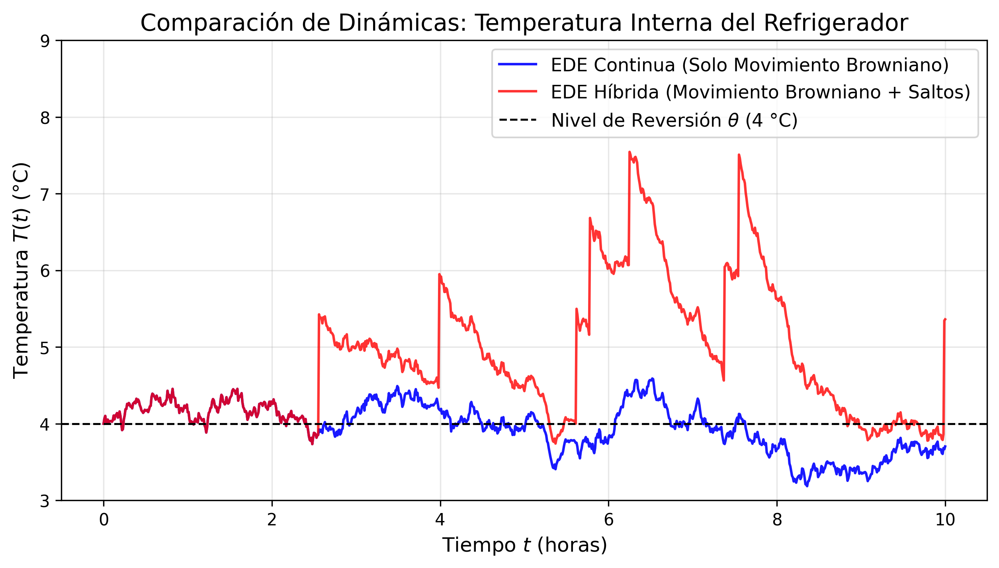

2 Fundamentos Teóricos Matemáticos
En este capítulo se presentarán las bases conceptuales y el marco formal del cálculo estocástico que fundamentan el desarrollo del modelo matemático para la red de frío. Se definirán en primer lugar los procesos estocásticos esenciales para, posteriormente, formalizar la teoría de medidas aleatorias de salto, establecer la teoría de integración de Itô, demostrar el teorema general de concatenación híbrida y concluir con la verificación analítica del sistema propuesto.
2.1 Espacios de Probabilidad, Filtraciones y Procesos Estocásticos
El modelado térmico de un refrigerador de vacunas expuesto a incertidumbres continuas y perturbaciones discretas requiere herramientas más allá del cálculo determinista. Desde una perspectiva analítica, un proceso estocástico representa la generalización de una variable aleatoria indexada en un conjunto ordenado, parametrizando la evolución de un sistema bajo incertidumbre.
Definición 2.1 (Espacio de Probabilidad Filtrado) Sea \((\Omega, \mathcal{F}, \mathbb{P})\) un espacio de probabilidad. Una filtración es una familia no decreciente de sub-\(\sigma\)-álgebras \(\{\mathcal{F}_t\}_{t \ge 0}\) de \(\mathcal{F}\), tal que \(\mathcal{F}_s \subseteq \mathcal{F}_t \subseteq \mathcal{F}\) para todo \(0 \le s \le t\). La cuaterna \((\Omega, \mathcal{F}, \{\mathcal{F}_t\}_{t \ge 0}, \mathbb{P})\) se denomina espacio de probabilidad filtrado. Se asumira que la filtración satisface las condiciones habituales:
- \(\mathcal{F}_0\) contiene todos los conjuntos \(\mathbb{P}\)-nulos de \(\mathcal{F}\).
- La filtración es continua por la derecha, i.e: \(\displaystyle \mathcal{F}_t = \bigcap_{\varepsilon > 0} \mathcal{F}_{t+\varepsilon}\) para todo \(t \ge 0\).
Intuitivamente, la \(\sigma\)-álgebra \(\mathcal{F}_t\) representa el historial completo de información observable del sistema físico (temperaturas, fallos eléctricos, aperturas de puertas) hasta el instante \(t\).
Definición 2.2 (Proceso Estocástico) Sea \((\Omega, \mathcal{F}, \mathbb{P})\) un espacio de probabilidad y sea \(\mathcal{S} \subseteq \mathbb{R}^d\) un espacio de estados dotado de su respectiva \(\sigma\)-álgebra de Borel \(\mathcal{B}(\mathcal{S})\). Un proceso estocástico es una familia de variables aleatorias \(\{X_t\}_{t \in \mathcal{T}}\) parametrizadas por \(t \in \mathcal{T}\), donde \(\mathcal{T} \subseteq \mathbb{R}\), es decir, es una función medible \(X: \mathcal{T} \times \Omega \to \mathcal{S}\).
Dependiendo de cómo es el conjunto de índices \(\mathcal{T}\), los procesos estocásticos se clasifican en dos:
- Procesos estocásticos a tiempo discreto: Si \(\mathcal{T}\) es numerable, por lo general \(\mathcal{T} = \mathbb{N}_0 = \{0, 1, 2, \dots\}\) o \(\mathcal{T} = \mathbb{Z}\), se dice que el proceso estocástico es a tiempo discreto. En este escenario, el sistema evoluciona mediante transiciones en pasos fijos discretizados.
- Procesos estocásticos a tiempo continuo: Si \(\mathcal{T}\) es un intervalo continuo de \(\mathbb{R}\), por lo general \(\mathcal{T} = [0, \infty)\) o un intervalo acotado \(\mathcal{T} = [0, T]\) con \(T > 0\), el proceso estocástico es a tiempo continuo. Esta estructura es la adecuada para modelar fenómenos físicos continuos en el dominio temporal, como el comportamiento de transferencia térmica.
Para enlazar la teoría probabilística con la observación empírica de un fenómeno aleatorio, es indispensable establecer la distinción entre el espacio funcional del proceso y sus realizaciones particulares.
Definición 2.3 (Trayectorias del Proceso Estocástico) Si \(\{X_t\}_{t \geq 0}\) es un proceso estocástico a tiempo continuo, para cada \(\omega \in \Omega\) fijo y asumiendo \(\mathcal{S} = \mathbb{R}\), se definen las trayectorias del proceso como: \[ \mathcal{T} = [0, \infty) \rightarrow \mathcal{S} = \mathbb{R} \] \[ t \rightarrow X_t(\omega). \]
Para la formulación rigurosa de integrales estocásticas (tanto respecto a difusiones como a medidas de salto), el proceso debe respetar la causalidad de la información, lo cual se formaliza mediante la adaptabilidad y la medibilidad progresiva.
Definición 2.4 (Proceso Adaptado, Medibilidad Progresiva y el Espacio Càdlàg) Un proceso estocástico \(\{X_t\}_{t \ge 0}\) es adaptado a la filtración \(\{\mathcal{F}_t\}_{t \ge 0}\) si, para cada \(t \ge 0\), la variable aleatoria \(X_t\) es \(\mathcal{F}_t\)-medible. Un requisito analítico más riguroso para la integración es la medibilidad progresiva, donde la aplicación \((s, \omega) \mapsto X_s(\omega)\) sobre el espacio producto \([0, t] \times \Omega\) es medible respecto a la \(\sigma\)-álgebra producto \(\mathcal{B}([0, t]) \otimes \mathcal{F}_t\).
Adicionalmente, diremos que el proceso pertenece al espacio càdlàg (del francés continue à droite, limite à gauche) si sus trayectorias \(t \mapsto X_t(\omega)\) son continuas por la derecha y poseen límites finitos por la izquierda para casi todo \(\omega \in \Omega\).
La restricción de trayectorias càdlàg es un requisito analítico indispensable en nuestra investigación, puesto que las perturbaciones de la red de frío por aperturas de puerta inducen discontinuidades instantáneas (saltos finitos) en la temperatura.
Finalmente, para evaluar eventos estructurales que ocurren en tiempos aleatorios (como fallas abruptas de energía de la red pública), requerimos el concepto de tiempo de paro.
Definición 2.5 (Tiempo de Paro) Una variable aleatoria \(\tau: \Omega \to [0, \infty]\) es un tiempo de paro respecto a la filtración \(\{\mathcal{F}_t\}_{t \ge 0}\) si, para todo instante \(t \ge 0\), la ocurrencia del evento estocástico antes o en el tiempo \(t\) depende únicamente de la información histórica disponible hasta ese instante; matemáticamente: \(\{\omega \in \Omega : \tau(\omega) \le t\} \in \mathcal{F}_t\).
2.2 Componentes Estocásticos Fundamentales
Las propiedades analíticas de un proceso estocástico, tales como la continuidad, la diferenciabilidad y la presencia de discontinuidades finitas, se definen estrictamente a partir del comportamiento de sus trayectorias, para más detalles consultar (Karlin y Taylor 1998). Los componentes aleatorios de nuestro sistema se sustentan en una clase específica de procesos estocásticos a tiempo continuo.
Definición 2.6 (Martingala) Un proceso estocástico a tiempo continuo \(\{M_t\}_{t \ge 0}\), integrable (i.e., \(\mathbb{E}[\vert{}M_t\vert{}] < \infty\) para todo \(t\)) y adaptado a \(\{\mathcal{F}_t\}_{t \ge 0}\), es una martingala si cumple la propiedad de valor esperado condicional nulo para los incrementos futuros: \[\mathbb{E}[M_t \mid \mathcal{F}_s] = M_s, \quad \text{casi seguramente para todo } 0 \le s \le t.\]
La condición de martingala implica la ausencia de tendencia predictible (representa matemáticamente un “juego justo”).
2.2.1 Movimiento Browniano (Proceso de Wiener)
Para representar las fluctuaciones térmicas continuas de baja intensidad asociadas al ruido intrínseco del termostato y microtransferencias de calor se utiliza el movimiento Browniano.
Definición 2.7 (Proceso de Wiener) Un proceso estocástico a tiempo continuo real-valuado \(\{W(t)\}_{t \ge 0}\) definido sobre un espacio de probabilidad filtrado \((\Omega, \mathcal{F}, \{\mathcal{F}_t\}, \mathbb{P})\) es un movimiento Browniano estándar o proceso de Wiener si cumple con las siguientes propiedades:
- \(W(0) = 0\) con probabilidad 1.
- Posee incrementos independientes; es decir, para cualesquiera tiempos \(0 < t_1 < t_2 < \dots < t_n\), las variables aleatorias \(W(t_1), W(t_2)-W(t_1), \dots, W(t_n)-W(t_{n-1})\) son mutuamente independientes.
- Posee incrementos estacionarios gaussianos, es decir: \[ W(t + h) - W(s + h) \sim W(t) - W(s) \sim \mathcal{N}(0, t-s), \ \forall 0 \le s < t, \ \forall h > 0. \]
El diferencial del proceso de Wiener, denotado como \(dW(t) = W(t+dt) - W(t)\), representa una perturbación en un intervalo infinitesimal \(dt\), caracterizada por una media \(\mathbb{E}[dW(t)] = 0\) y una varianza \(\mathbb{E}[(dW(t))^2] = dt\). Un rasgo crítico del movimiento Browniano, es que, aunque sus trayectorias son continuas, no son diferenciables en ningún punto con probabilidad 1. Esta restricción analítica invalida el uso del cálculo tradicional de Newton-Leibniz e impone la necesidad del cálculo de Itô. Para una revisión detallada de estas construcciones analíticas, se sugiere consultar a (Karatzas y Shreve 1998).

2.2.2 Procesos de Poisson y Discontinuidades por Saltos
Las aperturas de las puertas del refrigerador por el personal médico constituyen eventos que, por su naturaleza física temporal, no son continuos. Representan inyecciones discretas, repentinas y finitas de aire cálido al sistema, alterando la temperatura instantáneamente. El modelo matemático de tales eventos discretos recae en la familia de los procesos de conteo y saltos puros (Ross 1996).
Definición 2.8 (Proceso de Poisson Homogéneo) Un proceso estocástico a tiempo continuo \(\{N(t)\}_{t \ge 0}\) que toma valores enteros en el espacio de estados \(\mathcal{S} = \mathbb{N}_0\) es un proceso de Poisson homogéneo con parámetro de intensidad constante \(\lambda > 0\) si satisface las siguientes condiciones:
- \(N(0) = 0\) con probabilidad 1.
- Posee incrementos independientes; es decir, para cualesquiera tiempos \(0 \le t_1 < t_2 < \dots < t_n\), las variables aleatorias discretas \(N(t_2)-N(t_1), \dots, N(t_n)-N(t_{n-1})\) son mutuamente independientes.
- Posee incrementos estacionarios; lo que implica que la ley de probabilidad de cualquier incremento \(N(t+s) - N(s)\) depende únicamente de la amplitud temporal \(t\) y resulta invariante ante traslaciones sobre el origen cronológico \(s\). De forma explícita, la variable aleatoria \(N(t)\) sigue una distribución de Poisson con parámetro o tasa media dada por el producto \(\lambda t\), es decir:
\[ \mathbb{P}(N(t) = n) = \frac{(\lambda t)^n e^{-\lambda t}}{n!}, \quad n = 0, 1, 2, \dots \]
De manera asintótica local, las probabilidades de transición en un incremento infinitesimal \(h > 0\) están rigurosamente caracterizadas por: \[\mathbb{P}(N(t+h) - N(t) = 1) = \lambda h + o(h), \quad \mathbb{P}(N(t+h) - N(t) \ge 2) = o(h)\]
Donde la notación algebraico-asintótica de Landau \(o(h)\) denota una función de orden superior tal que \(\displaystyle \lim_{h \to 0} \frac{o(h)}{h} = 0\). Esto garantiza que la probabilidad de ocurrencia de múltiples eventos simultáneos en una fracción temporal infinitesimal es prácticamente nula.
Sin embargo, en la dinámica real de un centro de salud, la tasa de aperturas del refrigerador no es constante; exhibe una estacionalidad diaria (por ejemplo, mayor actividad en horas pico o contingencias). Para capturar esta variabilidad, generalizamos el modelo quitando la propiedad de incrementos estacionarios.
Definición 2.9 (Proceso de Poisson No Homogéneo) Un proceso estocástico a tiempo continuo \(\{N(t)\}_{t \ge 0}\) es un proceso de Poisson no homogéneo con función de intensidad \(\lambda(t) \ge 0\) localmente integrable para todo \(t \ge 0\) si satisface las siguientes condiciones:
- \(N(0) = 0\) con probabilidad 1.
- Posee incrementos independientes y la variable aleatoria de incremento \(N(t) - N(s)\) (con \(0 \le s < t\)) sigue a una distribución de Poisson con parámetro integral acumulado \(\Lambda(s, t) = \int_s^t \lambda(u) du\).
- Para todo \(t \ge 0\) y \(h > 0\), la probabilidad de que ocurra exactamente un evento en el intervalo \((t, t+h]\) está dada por la tasa instantánea en el tiempo \(t\): \[ \mathbb{P}(N(t+h) - N(t) = 1) = \lambda(t) h + o(h) \]
- La probabilidad de observar dos o más eventos en dicho intervalo es de orden superior a \(h\): \[ \mathbb{P}(N(t+h) - N(t) \ge 2) = o(h) \]
El proceso de conteo nos indica cuándo ocurren los eventos. Para acoplar la magnitud física real del evento (cuanto aumenta la temperatura interna del refrigerador por la apertura de puerta), debemos componer el proceso de conteo con magnitudes aleatorias discretas.
Definición 2.10 (Proceso de Poisson Compuesto) Sea \(\{N(t)\}_{t \ge 0}\) un proceso de Poisson no homogéneo con función de intensidad \(\lambda(t)\), y sea \(\{\gamma_i\}_{i \in \mathbb{N}}\) una sucesión de variables aleatorias independientes e idénticamente distribuidas (i.i.d.) que representan la magnitud de los saltos de los eventos, y que son estrictamente independientes de \(N(t)\). El proceso de Poisson compuesto \(J(t)\) acumula la magnitud de estos saltos en el tiempo y se define como: \[J(t) = \sum_{i=1}^{N(t)} \gamma_i\]

2.2.3 Cadenas de Markov a Tiempo Continuo
Los fallos prolongados en el suministro eléctrico de la red pública alteran el comportamiento de la temperatura interna del refrigerador. Para modelar estas transiciones entre estados macroscópicos del entorno, introducimos una cadena de Markov a tiempo continuo.
Definición 2.11 (Cadena de Markov a Tiempo Continuo) Sea \(\{\alpha(t)\}_{t \ge 0}\) un proceso estocástico definido sobre un espacio de probabilidad \((\Omega, \mathcal{F}, \mathbb{P})\), que toma valores en un espacio de estados finito y discreto \(\mathcal{M} = \{1, 2, \dots, m\}\). Se dice que el proceso \(\alpha(t)\) es una cadena de Markov a tiempo continuo si para todo \(s, t \ge 0\) y estados \(i, j \in \mathcal{M}\), se satisface la propiedad de pérdida de memoria de Markov: \[ \mathbb{P}(\alpha(t+s) = j \mid \alpha(s) = i, \alpha(u) = \alpha_u, 0 \le u < s) = \mathbb{P}(\alpha(t+s) = j \mid \alpha(s) = i) \]
Las leyes de transición y la evolución temporal de las probabilidades de estado de la cadena \(\{\alpha(t)\}_{t \ge 0}\) se encuentran completamente caracterizadas por la matriz de intensidades de transición \(Q = (q_{ij}) \in \mathbb{R}^{m \times m}\). Si definimos las funciones de probabilidad de transición condicional mediante \(p_{ij}(h) = \mathbb{P}(\alpha(t+h) = j \mid \alpha(t) = i)\) para un incremento temporal positivo \(h > 0\), las componentes de la matriz \(Q\) se determinan evaluando el límite analítico en el origen:
- Para transiciones entre estados distintos (\(i \neq j\)), la componente \(q_{ij}\) representa la tasa instantánea o intensidad de conmutación desde el régimen \(i\) hacia el régimen \(j\), definida como:
\[ q_{ij} = \lim_{h \to 0^+} \frac{p_{ij}(h)}{h} \ge 0 \]
- Para los elementos que se encuentran en la diagonal principal (\(i = j\)), la componente \(q_{ii}\) representa la tasa neta de salida del estado \(i\), cumpliendo por conservación de la probabilidad que la suma por filas de la matriz \(Q\) sea idénticamente nula se tiene que:
\[ q_{ii} = \lim_{h \to 0^+} \frac{p_{ii}(h) - 1}{h} = -\sum_{j \neq i} q_{ij} \]
A través de esta formulación basada en límites, las probabilidades de transición de primer orden quedan descritas mediante las expresiones \(p_{ij}(h) = q_{ij}h + o(h)\) para \(i \neq j\), y \(p_{ii}(h) = 1 + q_{ii}h + o(h)\). Esto permite modelar las conmutaciones macroscópicas de la dinámica del refrigerador sin necesidad de introducir variables temporales discretas ni heurísticas. Las propiedades asintóticas y de estabilidad de estos procesos híbridos se encuentran en (Asmussen 2003).
2.3 Teoría de Integración Estocástica de Itô
Para darle significado analítico a las ecuaciones diferenciales perturbadas por ruido continuo, es necesario ver la integración respecto al movimiento Browniano. En el cálculo determinista clásico, una integral de la forma \(\displaystyle \int_0^T X(t) dg(t)\) puede definirse trayectoria por trayectoria en el sentido de Riemann-Stieltjes o Lebesgue-Stieltjes siempre que la función integradora \(g(t)\) sea de variación finita (acotada) en el intervalo \([0, T]\).
Sin embargo, como se estableció previamente, las trayectorias del proceso de Wiener \(\{W(t)\}_{t \ge 0}\) no son diferenciables en ningún punto y poseen variación total infinita (no acotada) sobre cualquier intervalo temporal finito con probabilidad 1; esto es, para una partición \(0 = t_0 < t_1 < \dots < t_n = T,\) se cumple que: \[ \lim_{n \to \infty} \sum_{i=0}^{n-1} \vert W(t_{i+1}) - W(t_i) \vert = \infty \quad \text{casi seguramente.} \] Esta propiedad impide definir la integral \(\displaystyle \int_0^T X(t) dW(t)\) trayectoria por trayectoria para cada \(\omega \in \Omega\). No obstante, el movimiento Browniano posee variación cuadrática finita e igual a la longitud del intervalo temporal, es decir: \[ \lim_{n \to \infty} \sum_{i=0}^{n-1} \left( W(t_{i+1}) - W(t_i) \right)^2 = T \quad \text{en } L^2(\Omega, \mathbb{P}). \] Aprovechando esta propiedad de segundo momento y la independencia de los incrementos, K. Itô construyó la integral estocástica no como un límite puntual para cada trayectoria individual, sino como un límite en media cuadrática dentro de un espacio de funciones cuadrado-integrables (Mao y Yuan 2006; Situ 2005).
2.3.1 Construcción de la Integral de Itô e Isometría
Denotemos por \(\mathcal{L}^2([0, T]; \mathbb{R})\) al espacio de los procesos estocásticos real-valuados \(\{X(t)\}_{t \in [0, T]}\) que son progresivamente medibles respecto a la filtración \(\{\mathcal{F}_t\}_{t \ge 0}\) y que satisfacen la condición de integrabilidad en media cuadrática: \[ \mathbb{E}\left[\int_0^T \vert X(t) \vert^2 dt\right] < \infty. \]
La construcción de la integral procede inicialmente sobre procesos simples (escalonados) adaptados de la forma \(\displaystyle X_n(t) = \sum_{i=0}^{n-1} \xi_i \mathbf{1}_{(t_i, t_{i+1}]}(t)\), donde cada variable aleatoria \(\xi_i\) es \(\mathcal{F}_{t_i}\)-medible. Dado que el conjunto de procesos simples es denso en \(\mathcal{L}^2([0, T]; \mathbb{R})\), el operador integral se extiende por continuidad a cualquier proceso de dicho espacio mediante el siguiente límite.
Definición 2.12 (Integral de Itô) Sea \(\{X(t)\}_{t \in [0, T]} \in \mathcal{L}^2([0, T]; \mathbb{R})\) y sea \(\{W(t)\}_{t \ge 0}\) un movimiento Browniano estándar adaptado a \(\{\mathcal{F}_t\}_{t \ge 0}\). Sea \(\Pi_n = \{0 = t_0 < t_1 < \dots < t_n = T\}\) una sucesión de particiones del intervalo \([0, T]\) cuya norma \(\displaystyle N_{\Pi_n} = \max_{0 \le i \le n-1} (t_{i+1} - t_i)\) tiende a cero cuando \(n \to \infty\). La integral de Itô de \(X(t)\) respecto a \(W(t)\) en el intervalo \([0, T]\) se define como el límite en media cuadrática en el espacio \(L^2(\Omega, \mathbb{P})\) de las sumas parciales evaluadas en el extremo izquierdo de cada subintervalo, es decir: \[ \int_0^T X(t) dW(t) = \lim_{n \to \infty} \sum_{i=0}^{n-1} X(t_i) \left[ W(t_{i+1}) - W(t_i) \right] \quad \text{en } L^2(\Omega, \mathbb{P}), \] lo que significa explícitamente que: \[ \lim_{n \to \infty} \mathbb{E}\left[ \left\vert \int_0^T X(t) dW(t) - \sum_{i=0}^{n-1} X(t_i) \left[ W(t_{i+1}) - W(t_i) \right] \right\vert^2 \right] = 0. \]
El hecho de evaluar el integrando \(X(t_i)\) estrictamente en el instante inicial \(t_i\) de cada incremento \(\Delta W(t_i) = W(t_{i+1}) - W(t_i)\) garantiza que el integrando no anticipe información futura. Dado que \(X(t_i)\) es \(\mathcal{F}_{t_i}\)-medible y el incremento \(W(t_{i+1}) - W(t_i)\) es independiente de \(\mathcal{F}_{t_i}\), el valor esperado de cada término de la suma se factoriza como \(\mathbb{E}[X(t_i)]\mathbb{E}[W(t_{i+1}) - W(t_i)] = 0\). En consecuencia, la integral definida \(I(t) = \int_0^t X(s) dW(s)\) hereda la estructura de una martingala continua de cuadrado integrable respecto a \(\{\mathcal{F}_t\}_{t \ge 0}\), satisfaciendo la propiedad de media nula: \[ \mathbb{E}\left[ \int_0^T X(t) dW(t) \right] = 0. \]
Asimismo, la independencia entre incrementos sobre subintervalos disjuntos anula las covarianzas cruzadas al elevar la suma al cuadrado, dando lugar a una identidad fundamental para calcular la varianza de la integral estocástica (Karatzas y Shreve 1998; Mao y Yuan 2006).
Teorema 2.1 (Isometría de Itô para el Movimiento Browniano) Para todo proceso estocástico \(\{X(t)\}_{t \in [0, T]} \in \mathcal{L}^2([0, T]; \mathbb{R})\), el segundo momento de su integral de Itô coincide exactamente con la esperanza de la integral ordinaria de Riemann del proceso al cuadrado respecto al tiempo: \[ \mathbb{E}\left[ \left\vert \int_0^T X(t) dW(t) \right\vert^2 \right] = \mathbb{E}\left[ \int_0^T \vert X(t) \vert^2 dt \right]. \]
Esta identidad permite transformar el cálculo de momentos de integrales estocásticas en integrales deterministas respecto al tiempo, lo cual resulta esencial para acotar errores y demostrar teoremas de existencia y unicidad.
2.4 Teoría de Medidas Aleatorias e Integración Estocástica con Saltos
A diferencia del movimiento Browniano cuyas trayectorias cambian continuamente con variación no acotada, los procesos de conteo y de saltos puros (como el proceso de Poisson compuesto \(J(t)\)) permanecen constantes entre eventos sucesivos y solo experimentan un número finito de discontinuidades en cualquier intervalo acotado \([0, T]\). Por consiguiente, sus trayectorias son funciones escalonadas de variación finita (acotada).
Esta regularidad implica que la integración respecto a un proceso de saltos sí puede definirse trayectoria por trayectoria en el sentido de Lebesgue-Stieltjes (o Riemann-Stieltjes), reduciéndose de manera natural a una suma finita evaluada en los instantes donde ocurren los saltos. Sin embargo, en un sistema físico sujeto a choques aleatorios, cada evento discreto no solo queda determinado por el instante en que sucede, sino también por el tamaño o magnitud aleatoria del impacto. Para representar analíticamente perturbaciones cuyos efectos dependen tanto del tiempo como de la magnitud del salto, y poder aplicar la teoría de martingalas en ecuaciones diferenciales estocásticas, es necesario formular los procesos de salto mediante medidas aleatorias de Poisson (Situ 2005).
2.4.1 Medida Aleatoria de Conteo, Intensidad y Medida Compensada
Consideremos una sucesión de eventos discretos aleatorios definidos sobre el espacio de probabilidad filtrado \((\Omega, \mathcal{F}, \{\mathcal{F}_t\}_{t \ge 0}, \mathbb{P})\). Cada evento individual \(k\)-ésimo (\(k \in \mathbb{N}\)) se representa mediante un par ordenado de variables aleatorias: \[ (T_k, \gamma_k), \] donde:
- \(T_k \in (0, \infty)\), con \(0 < T_1 < T_2 < \dots\), denota el instante aleatorio en el que ocurre el \(k\)-ésimo salto.
- \(\gamma_k \in \mathcal{Z}\) se denomina la marca del evento y cuantifica la magnitud aleatoria del salto ocurrido en el instante \(T_k\). El conjunto \(\mathcal{Z} \subseteq \mathbb{R} \setminus \{0\}\), dotado de su \(\sigma\)-álgebra de Borel \(\mathcal{B}(\mathcal{Z})\), constituye el espacio medible de marcas.
Mientras que un proceso de Poisson ordinario \(N(t)\) cuenta únicamente cuántos eventos ocurrieron hasta el instante \(t\) sin distinguir su magnitud, una medida aleatoria de conteo clasifica y contabiliza los saltos simultáneamente según el intervalo temporal en que ocurren y el rango de valores al que pertenece su magnitud.
Definición 2.13 (Medida Aleatoria de Conteo de Poisson) Sea \((\mathcal{Z}, \mathcal{B}(\mathcal{Z}))\) el espacio medible de marcas y sea \(\{(T_k, \gamma_k)\}_{k \ge 1}\) la sucesión de tiempos de ocurrencia y magnitudes de un proceso de saltos adaptado a la filtración \(\{\mathcal{F}_t\}_{t \ge 0}\). Para cualquier intervalo temporal \((s, t] \subset [0, \infty)\) y cualquier subconjunto medible de magnitudes \(A \in \mathcal{B}(\mathcal{Z})\), el conteo aleatorio de eventos en la región producto \((s, t] \times A\) se define mediante la suma de funciones indicadoras: \[ N((s, t] \times A) = \sum_{k \ge 1} \mathbf{1}_{\{s < T_k \le t, \, \gamma_k \in A\}}, \] donde \(\mathbf{1}_{\{\cdot\}}\) toma el valor \(1\) si el \(k\)-ésimo salto ocurre dentro del intervalo de tiempo \((s, t]\) y su magnitud \(\gamma_k\) pertenece al conjunto \(A\), y toma el valor \(0\) en caso contrario. Se dice que \(N\) es una medida aleatoria de conteo de Poisson sobre \([0, \infty) \times \mathcal{Z}\) si:
- Para cada conjunto medible \(B \in \mathcal{B}([0, \infty)) \otimes \mathcal{B}(\mathcal{Z})\) con esperanza finita, la variable aleatoria entera \(N(B)\) sigue una distribución de Poisson con parámetro \(\mathbb{E}[N(B)]\).
- Para cualesquiera regiones disjuntas \(B_1, B_2, \dots, B_m \in \mathcal{B}([0, \infty)) \otimes \mathcal{B}(\mathcal{Z})\), las variables aleatorias de conteo \(N(B_1), N(B_2), \dots, N(B_m)\) son mutuamente independientes.
En notación diferencial de teoría de la medida, se escribe \(N(dt, dz)\) para denotar la medida de conteo infinitesimal sobre el elemento de tiempo \(dt\) y el elemento de magnitud \(dz\), de manera que: \[ N((s, t] \times A) = \int_s^t \int_A N(du, dz). \]
Intuitivamente, el diferencial \(N(dt, dz)\) actúa como un detector puntual aleatorio: vale \(1\) si exactamente en el instante infinitesimal \(dt\) se presenta un salto cuya magnitud se ubica en torno a \(z \in dz\), y vale \(0\) si no ocurre ningún salto de tales características.
Dado que \(N((0, t] \times A)\) acumula conteos enteros no negativos a medida que avanza el tiempo, es un proceso monótonamente creciente. En consecuencia, su esperanza es estrictamente positiva (\(\mathbb{E}[N((0, t] \times A)] > 0\)) y no constituye una martingala. Para caracterizar el valor esperado de estos conteos, se introduce la medida de intensidad.
Definición 2.14 (Medida de Intensidad) Sea \(N(dt, dz)\) una medida aleatoria de conteo de Poisson. La medida de intensidad asociada a \(N\) es la medida determinista \(\nu\) definida sobre \([0, \infty) \times \mathcal{Z}\) que asigna a cada región temporal y espacial el número esperado de saltos: \[ \nu((s, t] \times A) = \mathbb{E}\left[ N((s, t] \times A) \right] = \mathbb{E}\left[ \int_s^t \int_A N(du, dz) \right]. \] Si los instantes de ocurrencia de los eventos siguen un proceso de Poisson no homogéneo con función de intensidad \(\lambda(t) \ge 0\) localmente integrable, y las magnitudes de los saltos \(\{\gamma_k\}_{k \ge 1}\) son variables aleatorias independientes e idénticamente distribuidas con función de distribución acumulada \(F(z) = \mathbb{P}(\gamma_k \le z)\) (independientes de los tiempos de salto), la medida de intensidad en forma diferencial se factoriza como: \[ \nu_t(dz) dt = \mathbb{E}\left[ N(dt, dz) \right] = \lambda(t) dF(z) dt, \] donde \(dF(z)\) representa la medida de probabilidad inducida por la distribución de las magnitudes de salto (si las marcas poseen función de densidad \(f(z)\), entonces \(dF(z) = f(z)dz\)). De este modo, el número esperado de saltos en \((s, t]\) con magnitud en \(A\) viene dado por: \[ \mathbb{E}\left[ N((s, t] \times A) \right] = \int_s^t \int_A \nu_u(dz) du = \left( \int_s^t \lambda(u) du \right) \left( \int_A dF(z) \right). \]
En esta factorización, el término \(\lambda(t)dt\) cuantifica la probabilidad infinitesimal de que ocurra un salto en el instante \(t\), mientras que \(dF(z)\) determina la probabilidad de que dicho salto tenga una magnitud de tamaño \(z\).
Debido a que la medida de conteo \(N(dt, dz)\) posee una tendencia media creciente dada por \(\nu_t(dz)dt\), integrarla directamente introduce un arrastre determinista en el sistema. Para separar la fluctuación puramente aleatoria de su tendencia media y obtener un integrador con la propiedad de martingala de forma análoga al diferencial Browniano \(dW(t)\), se centra la medida aleatoria restándole su valor esperado (Situ 2005).
Definición 2.15 (Medida Aleatoria de Poisson Compensada) Sea \(N(dt, dz)\) una medida aleatoria de conteo de Poisson con medida de intensidad \(\nu_t(dz)dt = \lambda(t)dF(z)dt\). Se define la medida aleatoria de Poisson compensada, denotada por \(\tilde{N}(dt, dz)\), como la diferencia entre la medida de conteo observada y su medida de intensidad esperada: \[ \tilde{N}(dt, dz) = N(dt, dz) - \nu_t(dz) dt = N(dt, dz) - \lambda(t) dF(z) dt. \] Para cualquier subconjunto de marcas \(A \in \mathcal{B}(\mathcal{Z})\) tal que \(\mathbb{E}[N((0, t] \times A)] < \infty\), el proceso compensado evaluado en \([0, t]\): \[ \tilde{N}((0, t] \times A) = \int_0^t \int_A \tilde{N}(ds, dz) = N((0, t] \times A) - \int_0^t \int_A \lambda(s) dF(z) ds \] constituye una martingala centrada de cuadrado integrable respecto a la filtración \(\{\mathcal{F}_t\}_{t \ge 0}\), cumpliendo para todo \(t \ge 0\) que: \[ \mathbb{E}\left[ \tilde{N}((0, t] \times A) \right] = 0. \]
2.4.2 Integración Estocástica respecto a Medidas Aleatorias de Salto
Una vez definidas las medidas \(N(dt, dz)\) y \(\tilde{N}(dt, dz)\), procedemos a establecer cómo se integran funciones y procesos estocásticos respecto a ellas. En la teoría de integración con saltos, es fundamental exigir que el integrando no dependa del valor exacto del salto en el mismo instante en que este ocurre, sino únicamente de la información disponible inmediatamente antes del salto. Esta propiedad de causalidad se formaliza mediante el concepto de predecibilidad (Mao y Yuan 2006; Situ 2005).
Definición 2.16 (Proceso e Integrando Predecible) Sea \(\mathcal{P}\) la \(\sigma\)-álgebra sobre el espacio producto \([0, \infty) \times \Omega\) generada por todos los procesos estocásticos adaptados a \(\{\mathcal{F}_t\}_{t \ge 0}\) cuyas trayectorias son continuas por la izquierda. Un proceso estocástico \(\{X(t)\}_{t \ge 0}\) se denomina predecible si la aplicación \((t, \omega) \mapsto X(t, \omega)\) es medible respecto a \(\mathcal{P}\) (en particular, todo proceso adaptado con trayectorias continuas por la izquierda, tal como \(X(t^-)\), es predecible).
De manera más general, una función aleatoria dependiente de las marcas \(H: [0, \infty) \times \mathcal{Z} \times \Omega \to \mathbb{R}\) se denomina un integrando predecible si es medible respecto a la \(\sigma\)-álgebra producto \(\mathcal{P} \otimes \mathcal{B}(\mathcal{Z})\); esto es, si para cada marca \(z \in \mathcal{Z}\) fija, el proceso \(t \mapsto H(t, z, \omega)\) es predecible.
Puesto que en cualquier intervalo finito \([0, T]\) ocurre casi seguramente un número finito de saltos en los instantes \(T_k\) con marcas \(\gamma_k\), la integral de un proceso respecto a la medida de conteo \(N(dt, dz)\) se calcula directamente trayectoria por trayectoria como una suma finita de Lebesgue-Stieltjes evaluada en los puntos de discontinuidad.
Definición 2.17 (Integral Estocástica respecto a la Medida de Conteo de Poisson) Sea \(H(t, z, \omega)\) un integrando predecible tal que \(\displaystyle \int_0^T \int_{\mathcal{Z}} \vert H(t, z) \vert N(dt, dz) < \infty\) casi seguramente. La integral estocástica de \(H\) respecto a la medida aleatoria de conteo \(N(dt, dz)\) en el intervalo \([0, T]\) se define trayectoria por trayectoria como la suma finita de las contribuciones evaluadas en los pares de tiempo y magnitud de salto \((T_k, \gamma_k)\) observados hasta el instante \(T\): \[ \int_0^T \int_{\mathcal{Z}} H(t, z) N(dt, dz) = \sum_{0 < T_k \le T} H(T_k, \gamma_k). \] Si además el integrando satisface la condición de integrabilidad \(\mathbb{E}\left[ \int_0^T \int_{\mathcal{Z}} \vert H(t, z) \vert \nu_t(dz) dt \right] < \infty\), el valor esperado de la integral de conteo coincide con la esperanza de la integral respecto a la medida de intensidad: \[ \mathbb{E}\left[ \int_0^T \int_{\mathcal{Z}} H(t, z) N(dt, dz) \right] = \mathbb{E}\left[ \int_0^T \int_{\mathcal{Z}} H(t, z) \nu_t(dz) dt \right] = \mathbb{E}\left[ \int_0^T \lambda(t) \left( \int_{\mathcal{Z}} H(t, z) dF(z) \right) dt \right]. \]
Nótese que si se elige la función constante \(H(t, z) = \mathbf{1}_A(z)\), la definición anterior recupera exactamente el conteo de eventos \(N((0, T] \times A)\); en cambio, si \(H(t, z)\) depende de \(z\), la integral acumula el impacto ponderado de cada salto ocurrido en \([0, T]\).
A partir de esta expresión, cuando el integrando satisface la condición de integrabilidad anterior, la integral respecto a la medida compensada \(\tilde{N}(dt, dz)\) se define de manera directa restando a la suma de saltos observados su integral de compensación determinista: \[ \int_0^T \int_{\mathcal{Z}} H(t, z) \tilde{N}(dt, dz) = \int_0^T \int_{\mathcal{Z}} H(t, z) N(dt, dz) - \int_0^T \int_{\mathcal{Z}} H(t, z) \nu_t(dz) dt. \] Al igual que en la integral de Itô clásica, esta definición se extiende por densidad en media cuadrática a la clase general de integrandos predecibles de cuadrado integrable respecto a la medida de intensidad (Situ 2005).
Definición 2.18 (Integral Estocástica respecto a la Medida de Poisson Compensada) Sea \(H(t, z, \omega)\) un integrando predecible respecto a \(\{\mathcal{F}_t\}_{t \ge 0}\) que pertenece al espacio de cuadrado integrable respecto a la medida de intensidad; esto es, que satisface para todo \(T > 0\) la condición: \[ \mathbb{E} \left[ \int_0^T \int_{\mathcal{Z}} \vert H(t, z) \vert^2 \nu_t(dz) dt \right] = \mathbb{E} \left[ \int_0^T \lambda(t) \left( \int_{\mathcal{Z}} \vert H(t, z) \vert^2 dF(z) \right) dt \right] < \infty. \] Entonces, el proceso de integral estocástica compensada: \[ M_t = \int_0^t \int_{\mathcal{Z}} H(s, z) \tilde{N}(ds, dz), \quad t \in [0, T], \] está bien definido en \(L^2(\Omega, \mathbb{P})\) y constituye una martingala de cuadrado integrable con trayectorias càdlàg respecto a la filtración \(\{\mathcal{F}_t\}_{t \ge 0}\), cuya esperanza es idénticamente nula: \[ \mathbb{E}\left[ \int_0^T \int_{\mathcal{Z}} H(t, z) \tilde{N}(dt, dz) \right] = 0. \]
De forma analoga al Movimiento Browniano, la integral respecto a la medida aleatoria de Poisson compensada posee una propiedad de isometría en \(L^2(\Omega, \mathbb{P})\) que relaciona su varianza con una integral determinista respecto al compensador \(\nu_t(dz)dt\) (Situ 2005).
Teorema 2.2 (Isometría de Itô para la Medida Compensada) Para todo integrando predecible \(H(t, z, \omega)\) tal que \(\mathbb{E} \left[ \int_0^T \int_{\mathcal{Z}} \vert H(t, z) \vert^2 \nu_t(dz) dt \right] < \infty\), el segundo momento de la integral estocástica respecto a la medida compensada \(\tilde{N}(dt, dz)\) satisface la identidad: \[ \mathbb{E}\left[ \left\vert \int_0^T \int_{\mathcal{Z}} H(t, z) \tilde{N}(dt, dz) \right\vert^2 \right] = \mathbb{E}\left[ \int_0^T \int_{\mathcal{Z}} \vert H(t, z) \vert^2 \nu_t(dz) dt \right] = \mathbb{E}\left[ \int_0^T \lambda(t) \left( \int_{\mathcal{Z}} \vert H(t, z) \vert^2 dF(z) \right) dt \right]. \]
Con este marco de integración establecido, podemos enunciar el lema que vincula al proceso de Poisson compuesto definido en la sección anterior Definición 2.10 con las integrales estocásticas respecto a medidas aleatorias de salto.
Lema 2.1 (Lema de Equivalencia del Proceso de Poisson Compuesto) Sea \(\displaystyle J(t) = \sum_{i=1}^{N(t)} \gamma_i\) un proceso de Poisson compuesto donde \(\displaystyle \{N(t)\}_{t \ge 0}\) es un proceso de Poisson no homogéneo con función de intensidad \(\lambda(t) \ge 0\), y \(\{\gamma_i\}_{i \in \mathbb{N}}\) es una sucesión de variables aleatorias independientes e idénticamente distribuidas con función de distribución \(F(z)\) y media finita \(\mathbb{E}[\vert \gamma_i \vert] < \infty\), independientes de \(N(t)\). Entonces, el proceso \(J(t)\) admite la siguiente representación integral respecto a la medida aleatoria de conteo \(N(dt, dz)\): \[ J(t) = \int_0^t \int_{\mathbb{R}} z N(ds, dz), \quad \text{o en forma diferencial,} \quad dJ(t) = \int_{\mathbb{R}} z N(dt, dz). \] En consecuencia, sustituyendo la relación de la medida compensada \(N(dt, dz) = \tilde{N}(dt, dz) + \lambda(t)dF(z)dt\), el diferencial del proceso de Poisson compuesto se descompone en el diferencial de una martingala de salto compensado (de media cero) más un término de deriva determinista proporcional al tamaño esperado del salto: \[ dJ(t) = \int_{\mathbb{R}} z \tilde{N}(dt, dz) + \left( \lambda(t) \int_{\mathbb{R}} z dF(z) \right) dt = \int_{\mathbb{R}} z \tilde{N}(dt, dz) + \lambda(t) \mathbb{E}[\gamma_i] dt. \]
Esta equivalencia (Lema 2.1) es fundamental para nuestra investigación, ya que nos permitirá reescribir la ecuación diferencial estocástica para el refrigerador de vacunas planteada originalmente mediante incrementos del proceso de Poisson compuesto \(dJ(t)\) en la forma canónica de una EDE impulsada por martingalas (\(\tilde{N}(dt, dz)\) y \(dW(t)\)), requisito indispensable para aplicar los teoremas de existencia y unicidad de R. Situ (Situ 2005).
2.5 Ecuaciones Diferenciales Estocásticas Continuas
Una vez definida la integral de Itô, es posible formular ecuaciones que combinan una dinámica determinista con perturbaciones aleatorias continuas.
Definición 2.19 (Ecuación Diferencial Estocástica Clásica) Una ecuación diferencial estocástica (EDE) continua para un proceso \(\{X(t)\}_{t \ge 0}\) es una relación expresada en su forma diferencial mediante:
\[ dX(t) = b(t, X(t)) dt + \sigma(t, X(t)) dW(t) \tag{2.1}\]
donde \(b(t, X(t))\) denota el coeficiente de deriva y \(\sigma(t, X(t))\) representa el coeficiente de difusión.
Dado que el movimiento Browniano no es diferenciable, el término \(dX(t)\) en la Ecuación 2.1 no representa una derivada ordinaria, sino una notación abreviada de su ecuación integral equivalente:
\[ X(t) = X(0) + \int_0^t b(s, X(s)) ds + \int_0^t \sigma(s, X(s)) dW(s). \tag{2.2}\]
En la Ecuación 2.2, la primera integral es una integral ordinaria de Riemann respecto al tiempo que captura la tendencia determinista del sistema, mientras que la segunda es una integral de Itô que modela la acumulación del ruido continuo. Para una revisión detallada del cálculo estocástico elemental, se sugiere consultar a (Karatzas y Shreve 1998).
Para asegurar que una EDE tenga solución y sea única y bien definida en todo su dominio temporal, los coeficientes de deriva y difusión deben satisfacer las restricciones del siguiente teorema.
Teorema 2.3 (Teorema Clásico de Existencia y Unicidad) Sea la EDE definida en la Ecuación 2.1 con una condición inicial \(X(0) = x_0\), medible respecto a \(\mathcal{F}_0\) e independiente del proceso de Wiener \(\{W(t)\}_{t \ge 0}\), tal que \(\mathbb{E}[\vert x_0 \vert^2] < \infty\). Supóngase que para todo \(t \in [0, T]\) y cualesquiera \(x, y \in \mathbb{R}\), los coeficientes satisfacen las siguientes dos condiciones:
- Condición de Lipschitz Global: Existe una constante \(L > 0\) tal que: \[ \vert b(t, x) - b(t, y) \vert^2 + \vert \sigma(t, x) - \sigma(t, y) \vert^2 \le L \vert x - y \vert^2 \]
- Condición de Crecimiento Lineal: Existe una constante \(K > 0\) tal que: \[ \vert b(t, x) \vert^2 + \vert \sigma(t, x) \vert^2 \le K (1 + \vert x \vert^2) \]
Bajo el cumplimiento de ambas condiciones, existe una única solución fuerte \(\{X(t)\}_{t \in [0, T]}\) adaptada a la filtración \(\{\mathcal{F}_t\}_{t \ge 0}\), con trayectorias continuas con probabilidad 1 y tal que \(\mathbb{E}\left[\sup_{0 \le t \le T} \vert X(t) \vert^2\right] < \infty\). Una demostración detallada de este teorema, basada en el método de iteraciones sucesivas de Picard, se encuentra en (Arnold 1974).
En este resultado, la condición de Lipschitz garantiza que dos trayectorias con la misma condición inicial sean indistinguibles (unicidad fuerte), mientras que la condición de crecimiento lineal acota la tasa de cambio de los coeficientes para evitar que la solución diverja a infinito en un tiempo finito (existencia global).
Para evaluar funciones diferenciables que dependen de la solución de una EDE continua, la regla de la cadena del cálculo ordinario se sustituye por el Lema de Itô.
Teorema 2.4 (Lema de Itô para Difusiones Continuas) Sea \(\{X(t)\}_{t \ge 0}\) un proceso estocástico que satisface la Ecuación 2.1, y sea \(f(t, x)\) una función escalar continuamente diferenciable respecto a \(t\) (\(\mathcal{C}^1\)) y dos veces continuamente diferenciable respecto a \(x\) (\(\mathcal{C}^2\)). Entonces el diferencial estocástico de la función compuesta \(f(t, X(t))\) está dado por:
\[ df(t, X(t)) = \left[ \frac{\partial f}{\partial t} + b(t, X(t))\frac{\partial f}{\partial x} + \frac{1}{2}\sigma^2(t, X(t))\frac{\partial^2 f}{\partial x^2} \right] dt + \sigma(t, X(t))\frac{\partial f}{\partial x} dW(t) \]
A diferencia del cálculo clásico, aparece el término adicional de segundo orden \(\frac{1}{2}\sigma^2(t, X(t))\frac{\partial^2 f}{\partial x^2} dt\). Este término proviene de que la variación cuadrática del movimiento Browniano no es nula, por lo que en una expansión de Taylor los incrementos cuadráticos aportan una contribución de primer orden temporal, cumpliendo la regla operacional \((dW(t))^2 = dt\).
2.5.1 El Proceso de Ornstein-Uhlenbeck Clásico
Como paso previo al desarrollo del modelo termodinámico híbrido, se introduce una EDE lineal que modela sistemas físicos con retorno hacia un estado de equilibrio: el proceso de Ornstein-Uhlenbeck.
Definición 2.20 (Proceso de Ornstein-Uhlenbeck) Un proceso estocástico \(\{X(t)\}_{t \ge 0}\) es un proceso de Ornstein-Uhlenbeck si satisface la siguiente ecuación diferencial estocástica lineal:
\[ dX(t) = \kappa (\theta - X(t)) dt + \sigma dW(t), \quad X(0) = x_0, \tag{2.3}\]
donde \(\kappa > 0\) representa la tasa de reversión a la media, \(\theta \in \mathbb{R}\) denota el nivel de equilibrio a largo plazo y \(\sigma > 0\) es el coeficiente de difusión constante.
La característica principal de la Ecuación 2.3 radica en su deriva lineal \(b(x) = \kappa(\theta - x)\). Cuando el estado del proceso supera el valor de equilibrio (\(X(t) > \theta\)), la deriva es negativa y dirige la trayectoria hacia abajo; Si el proceso se encuentra por debajo del nivel de referencia (\(X(t) < \theta\)), la deriva es positiva e impulsa un crecimiento hacia \(\theta\). Esta propiedad de reversión a la media convierte a este proceso en el modelo base para describir la evolución térmica de sistemas regidos por la ley de enfriamiento de Newton.
Aplicando el Lema de Itô (Teorema 4.1) a la función \(f(t, x) = x e^{\kappa t}\), se obtiene que \(d(X(t)e^{\kappa t}) = \kappa \theta e^{\kappa t} dt + \sigma e^{\kappa t} dW(t)\). Integrando en el intervalo \([0, t]\) y despejando \(X(t)\), se obtiene la solución analítica explícita del proceso:
\[ X(t) = \theta + (x_0 - \theta)e^{-\kappa t} + \sigma \int_0^t e^{-\kappa(t-s)} dW(s). \tag{2.4}\]
Dado que el integrando \(e^{-\kappa(t-s)}\) es una función determinista, la integral de Itô en la Ecuación 2.4 es una variable aleatoria gaussiana centrada. Asumiendo una condición inicial determinista \(x_0\), el valor esperado y la varianza del proceso (calculada mediante la Isometría de Itô, Teorema 2.1) están dadas por:
\[ \mathbb{E}[X(t)] = \theta + (x_0 - \theta)e^{-\kappa t}, \qquad \text{Var}(X(t)) = \sigma^2 \int_0^t e^{-2\kappa(t-s)} ds = \frac{\sigma^2}{2\kappa}\left(1 - e^{-2\kappa t}\right). \]
Por consiguiente, para todo instante \(t > 0\), la variable aleatoria \(X(t)\) sigue una distribución normal:
\[ X(t) \sim \mathcal{N}\left( \theta + (x_0 - \theta)e^{-\kappa t}, \, \frac{\sigma^2}{2\kappa}\left(1 - e^{-2\kappa t}\right) \right), \]
la cual converge cuando \(t \to \infty\) a una distribución estacionaria gaussiana \(\mathcal{N}\left(\theta, \frac{\sigma^2}{2\kappa}\right)\) independientemente del estado inicial \(x_0\) (Karlin y Taylor 1998).
3 DE AQUI
3.1 Ecuaciones Diferenciales Estocásticas con Saltos
Los modelos de difusión continua basados únicamente en el movimiento Browniano resultan insuficientes cuando el sistema físico experimenta perturbaciones discretas e instantáneas. Al incorporar la medida aleatoria de Poisson compensada \(\tilde{N}(dt, dz)\) dentro de la dinámica diferencial, se obtiene una ecuación diferencial estocástica con saltos (Situ 2005).
Definición 3.1 (Ecuación Diferencial Estocástica con Saltos de Poisson) Sea \((\Omega, \mathcal{F}, \{\mathcal{F}_t\}_{t \ge 0}, \mathbb{P})\) un espacio de probabilidad filtrado. Sean \(W(t)\) un movimiento Browniano estándar y \(\tilde{N}(dt, dz) = N(dt, dz) - \nu_t(dz)dt\) una medida aleatoria de Poisson compensada sobre \([0, \infty) \times \mathcal{Z}\), ambos adaptados a \(\{\mathcal{F}_t\}_{t \ge 0}\) y mutuamente independientes. Una ecuación diferencial estocástica con saltos en el intervalo \([t_0, T]\) (con \(0 \le t_0 < T < \infty\)) es una relación simbólica de la forma:
\[ dX(t) = b(t, X(t^-)) dt + \sigma(t, X(t^-)) dW(t) + \int_{\mathcal{Z}} \gamma(t, X(t^-), z) \tilde{N}(dt, dz), \quad X(t_0) = x_0, \tag{3.1}\]
donde \(b: [t_0, T] \times \mathbb{R} \to \mathbb{R}\) es el coeficiente de deriva compensada, \(\sigma: [t_0, T] \times \mathbb{R} \to \mathbb{R}\) es el coeficiente de difusión continua y \(\gamma: [t_0, T] \times \mathbb{R} \times \mathcal{Z} \to \mathbb{R}\) cuantifica la amplitud de los saltos.
Un proceso estocástico \(\{X(t)\}_{t \in [t_0, T]}\) adaptado a \(\{\mathcal{F}_t\}_{t \ge 0}\) y con trayectorias càdlàg es una solución fuerte de la Ecuación 3.1 si sus coeficientes evaluados a lo largo de la trayectoria son integrables casi seguramente y si para todo \(t \in [t_0, T]\) se satisface con probabilidad 1 la ecuación integral equivalente:
\[ X(t) = x_0 + \int_{t_0}^t b(s, X(s^-)) ds + \int_{t_0}^t \sigma(s, X(s^-)) dW(s) + \int_{t_0}^t \int_{\mathcal{Z}} \gamma(s, X(s^-), z) \tilde{N}(ds, dz). \tag{3.2}\]
En la Ecuación 3.1 y la Ecuación 3.2, el integrando se evalúa en el límite por la izquierda \(X(t^-) = \lim_{s \uparrow t} X(s)\) para asegurar que sea un proceso predecible (Definición 2.16) y que la integral respecto a la medida compensada \(\tilde{N}(dt, dz)\) preserve la propiedad de martingala (Situ 2005). Cabe notar que en las integrales respecto a \(ds\) y \(dW(s)\) es indistinto escribir \(X(s)\) o \(X(s^-)\), dado que toda trayectoria càdlàg posee a lo sumo un número numerable de discontinuidades, el cual constituye un conjunto de medida de Lebesgue nula.
Para ilustrar la diferencia analítica y cualitativa entre una difusión continua y un proceso gobernado por una EDE con saltos, en la Figura 4.1 se contrastan dos trayectorias simuladas de un proceso con reversión a la media.

Como se observa en la Figura 4.1, la presencia de discontinuidades puntuales modifica sustancialmente el comportamiento de las realizaciones del proceso. Debido a que estos saltos ocurren de forma instantánea (\(\Delta X(t) = X(t) - X(t^-) \neq 0\)), el Lema de Itô continuo (Teorema 4.1) debe extenderse incorporando un operador de diferencias finitas que contabilice el cambio exacto de cualquier función diferenciable en los instantes de discontinuidad (Situ 2005; Platen y Bruti-Liberati 2010).
Teorema 3.1 (Fórmula de Itô para Difusiones con Saltos) Sea \(\{X(t)\}_{t \ge t_0}\) una solución de la EDE con saltos (Ecuación 3.1) cuya medida de conteo \(N(dt, dz)\) posee medida de intensidad \(\nu_t(dz)dt = \lambda(t)dF(z)dt\). Sea \(f(t, x)\) una función real continuamente diferenciable respecto a \(t\) (\(\mathcal{C}^1\)) y dos veces continuamente diferenciable respecto a \(x\) (\(\mathcal{C}^2\)). Entonces el proceso compuesto \(f(t, X(t))\) satisface el diferencial estocástico:
\[ \begin{aligned} df(t, X(t)) = & \left[ \frac{\partial f}{\partial t}(t, X(t)) + b(t, X(t))\frac{\partial f}{\partial x}(t, X(t)) + \frac{1}{2}\sigma^2(t, X(t))\frac{\partial^2 f}{\partial x^2}(t, X(t)) \right] dt \\ & + \int_{\mathcal{Z}} \left[ f(t, X(t^-) + \gamma(t, X(t^-), z)) - f(t, X(t^-)) - \gamma(t, X(t^-), z)\frac{\partial f}{\partial x}(t, X(t^-)) \right] \nu_t(dz) dt \\ & + \sigma(t, X(t^-))\frac{\partial f}{\partial x}(t, X(t^-)) dW(t) \\ & + \int_{\mathcal{Z}} \left[ f(t, X(t^-) + \gamma(t, X(t^-), z)) - f(t, X(t^-)) \right] \tilde{N}(dt, dz). \end{aligned} \tag{3.3}\]
Las condiciones suficientes para garantizar que la Ecuación 3.1 posea una solución fuerte única y acotada en media cuadrática fueron establecidas por R. Situ mediante el método de contracción en espacios de Banach y estimaciones a priori (Situ 2005).
Teorema 3.2 (Teorema de Existencia y Unicidad con Saltos de Poisson (Teorema 117 y Lema 114 de Situ)) Consideremos la ecuación diferencial estocástica con saltos (Ecuación 3.1) en el intervalo \([t_0, T]\), con dato inicial \(X(t_0) = x_0\) medible respecto a \(\mathcal{F}_{t_0}\) tal que \(\mathbb{E}[\vert x_0 \vert^2] < \infty\). Supóngase que existen constantes positivas \(L, K > 0\) tales que para todo \(t \in [t_0, T]\) y cualesquiera \(x, y \in \mathbb{R}\), los coeficientes satisfacen:
- Condición de Lipschitz Global: \[ \vert b(t, x) - b(t, y) \vert^2 + \vert \sigma(t, x) - \sigma(t, y) \vert^2 + \int_{\mathcal{Z}} \vert \gamma(t, x, z) - \gamma(t, y, z) \vert^2 \nu_t(dz) \le L \vert x - y \vert^2. \]
- Condición de Crecimiento Lineal: \[ \vert b(t, x) \vert^2 + \vert \sigma(t, x) \vert^2 + \int_{\mathcal{Z}} \vert \gamma(t, x, z) \vert^2 \nu_t(dz) \le K (1 + \vert x \vert^2). \]
Entonces existe una única solución fuerte \(\{X(t)\}_{t \in [t_0, T]}\) adaptada a \(\{\mathcal{F}_t\}_{t \ge 0}\) con trayectorias càdlàg casi seguramente. Además, la solución satisface la cota de segundo momento: \[ \mathbb{E}\left[ \sup_{t_0 \le t \le T} \vert X(t) \vert^2 \right] \le C \left( 1 + \mathbb{E}[\vert x_0 \vert^2] \right) < \infty, \] donde \(C > 0\) es una constante que depende únicamente de \(K\) y de la longitud del intervalo \((T - t_0)\) (Situ 2005).
Una propiedad fundamental derivada de la estructura de martingala y de la propiedad de Markov fuerte tanto del movimiento Browniano como de las medidas aleatorias de Poisson (Teoremas 100 y 101 en (Situ 2005); Observación 3.10 en (Mao y Yuan 2006)) establece que en el Teorema 3.2 los extremos temporales \(t_0\) y \(T\) pueden sustituirse por tiempos de paro acotados \(\tau_a\) y \(\tau_b\) tales que \(0 \le \tau_a \le \tau_b \le T\) casi seguramente, siempre que la condición inicial \(X(\tau_a)\) sea \(\mathcal{F}_{\tau_a}\)-medible. Esta propiedad permitirá resolver ecuaciones con cambios de régimen tramo a tramo sobre intervalos estocásticos.
3.2 Herramientas Analíticas y Estocásticas Auxiliares
Para demostrar formalmente la existencia, unicidad y acotamiento en segundo momento de las ecuaciones diferenciales estocásticas híbridas, así como para verificar analíticamente los coeficientes de nuestro modelo termodinámico, requerimos tres desigualdades clásicas del análisis matemático y estocástico (Mao y Yuan 2006; Situ 2005).
Lema 3.1 (Desigualdad Elemental de Sumas Finitas) Para cualquier entero \(k \ge 1\), cualesquiera números reales \(a_1, a_2, \dots, a_k \in \mathbb{R}\) y todo exponente \(p \ge 1\), una aplicación directa de la desigualdad discreta de Hölder y la convexidad de la función \(x \mapsto \vert x \vert^p\) implica la cota: \[ \left\vert \sum_{i=1}^k a_i \right\vert^p \le k^{p-1} \sum_{i=1}^k \vert a_i \vert^p. \] En particular, para el análisis en media cuadrática (\(p = 2\)), utilizaremos esta desigualdad para \(k = 2\) y \(k = 4\): \[ \vert a \pm b \vert^2 \le 2\vert a \vert^2 + 2\vert b \vert^2, \qquad \vert a + b + c + d \vert^2 \le 4\left( \vert a \vert^2 + \vert b \vert^2 + \vert c \vert^2 + \vert d \vert^2 \right). \]
Al acotar el supremo temporal de una solución estocástica, no es posible intercambiar directamente el operador de valor esperado con el supremo dentro de las integrales de martingala. Para controlar dichos términos mediante sus momentos en el tiempo final e invocar posteriormente las isometrías de Itô, se emplea la desigualdad maximal de Doob (Mao y Yuan 2006; Situ 2005).
Teorema 3.3 (Desigualdad Maximal de Martingalas de Doob) Sea \(\{M(t)\}_{t \ge 0}\) una martingala real con trayectorias càdlàg respecto a la filtración \(\{\mathcal{F}_t\}_{t \ge 0}\), y sea \([a, b] \subset [0, \infty)\) un intervalo cerrado y acotado. Si \(p > 1\) y \(\mathbb{E}[\vert M(b) \vert^p] < \infty\), entonces se cumple que: \[ \mathbb{E}\left[ \sup_{a \le t \le b} \vert M(t) \vert^p \right] \le \left( \frac{p}{p - 1} \right)^p \mathbb{E}\left[ \vert M(b) \vert^p \right]. \] En particular, para martingalas de cuadrado integrable (\(p = 2\)), la constante óptima es \(\left(\frac{2}{2-1}\right)^2 = 4\), por lo que para toda función integrable \(g \in \mathcal{L}^2([a, b]; \mathbb{R})\) e integrando predecible \(H\), combinando esta desigualdad con las isometrías de Itô (Teorema 2.1 y Teorema 2.2), se obtienen las cotas: \[ \mathbb{E}\left[ \sup_{a \le t \le b} \left\vert \int_a^t g(s) dW(s) \right\vert^2 \right] \le 4 \mathbb{E}\left[ \int_a^b \vert g(s) \vert^2 ds \right], \] \[ \mathbb{E}\left[ \sup_{a \le t \le b} \left\vert \int_a^t \int_{\mathcal{Z}} H(s, z) \tilde{N}(ds, dz) \right\vert^2 \right] \le 4 \mathbb{E}\left[ \int_a^b \int_{\mathcal{Z}} \vert H(s, z) \vert^2 \nu_s(dz) ds \right]. \]
Finalmente, para despejar la función de estado esperada cuando esta aparece en ambos lados de una desigualdad integral, se recurre al Lema de Grönwall (Mao y Yuan 2006).
Lema 3.2 (Desigualdad Integral de Grönwall) Sea \(T > t_0 \ge 0\) y sea \(u: [t_0, T] \to [0, \infty)\) una función medible de Borel, acotada y no negativa, y sea \(v: [t_0, T] \to [0, \infty)\) una función integrable no negativa. Si existe una constante \(C \ge 0\) tal que para todo \(t \in [t_0, T]\) se satisface la desigualdad integral: \[ u(t) \le C + \int_{t_0}^t v(s) u(s) ds, \] entonces, para todo \(t \in [t_0, T]\), la función \(u(t)\) cumple la cota exponencial: \[ u(t) \le C \exp\left( \int_{t_0}^t v(s) ds \right). \]
3.3 Sistemas Estocásticos Híbridos: Discontinuidades y Conmutación Markoviana
Cuando los parámetros estructurales de un sistema físico cambian abruptamente debido a transiciones en el entorno (como cortes y restablecimientos en el suministro eléctrico) y simultáneamente el estado continuo sufre perturbaciones impulsivas (como aperturas de puerta), la dinámica conjunta se describe mediante una ecuación diferencial estocástica híbrida con conmutación markoviana y saltos (Mao y Yuan 2006; Yin y Zhu 2010).
Para formalizar el análisis sobre subintervalos cuyos extremos son tiempos de paro aleatorios \(\tau\) y \(\rho\) tales que \(0 \le \tau(\omega) \le \rho(\omega)\) para todo \(\omega \in \Omega\), adoptamos la notación estándar de intervalos estocásticos de (Mao y Yuan 2006): \[ [[\tau, \rho]] = \{(t, \omega) \in [0, \infty) \times \Omega : \tau(\omega) \le t \le \rho(\omega)\}, \qquad [[\tau, \rho[[ = \{(t, \omega) \in [0, \infty) \times \Omega : \tau(\omega) \le t < \rho(\omega)\}. \] Asimismo, denotamos por \(\mathcal{M}^2([[\tau, \rho]]; \mathbb{R})\) al espacio de los procesos estocásticos real-valuados \(\{X(t)\}\) adaptados a \(\{\mathcal{F}_t\}_{t \ge 0}\) y definidos en \([[\tau, \rho]]\) tales que \(\mathbb{E}\left[\int_\tau^\rho \vert X(t) \vert^2 dt\right] < \infty\), y por \(L^2_{\mathcal{F}_\tau}(\Omega; \mathbb{R})\) a la familia de variables aleatorias \(\xi\) que son \(\mathcal{F}_\tau\)-medibles y satisfacen \(\mathbb{E}[\vert \xi \vert^2] < \infty\) (Mao y Yuan 2006).
Definición 3.2 (Ecuación Diferencial Estocástica Híbrida con Saltos) Sea \(\{\alpha(t)\}_{t \ge 0}\) una cadena de Markov a tiempo continuo con trayectorias continuas por la derecha, adaptada a \(\{\mathcal{F}_t\}_{t \ge 0}\), que toma valores en un espacio de estados finito \(\mathcal{M} = \{1, 2, \dots, m\}\) con matriz generadora \(Q = (q_{ij})_{m \times m}\). Sean \(W(t)\) un movimiento Browniano estándar y \(\tilde{N}(dt, dz) = N(dt, dz) - \nu_t(dz)dt\) una medida aleatoria de Poisson compensada sobre \([0, \infty) \times \mathcal{Z}\). Una ecuación diferencial estocástica híbrida con saltos en el intervalo \([t_0, T]\) se expresa en forma diferencial como:
\[ dX(t) = b(t, X(t^-), \alpha(t^-)) dt + \sigma(t, X(t^-), \alpha(t^-)) dW(t) + \int_{\mathcal{Z}} \gamma(t, X(t^-), \alpha(t^-), z) \tilde{N}(dt, dz), \tag{3.4}\]
con datos iniciales \(X(t_0) = x_0 \in L^2_{\mathcal{F}_{t_0}}(\Omega; \mathbb{R})\) y \(\alpha(t_0) = \alpha_0\), donde \(\alpha_0\) es una variable aleatoria \(\mathcal{F}_{t_0}\)-medible con valores en \(\mathcal{M}\), y las funciones de coeficientes están definidas por \(b: [t_0, T] \times \mathbb{R} \times \mathcal{M} \to \mathbb{R}\), \(\sigma: [t_0, T] \times \mathbb{R} \times \mathcal{M} \to \mathbb{R}\) y \(\gamma: [t_0, T] \times \mathbb{R} \times \mathcal{M} \times \mathcal{Z} \to \mathbb{R}\).
Un proceso estocástico \(\{X(t)\}_{t \in [t_0, T]}\) se denomina una solución fuerte de la Ecuación 3.4 en \([t_0, T]\) si cumple las siguientes propiedades (Mao y Yuan 2006; Situ 2005):
- \(\{X(t)\}_{t \in [t_0, T]}\) es adaptado a \(\{\mathcal{F}_t\}_{t \ge 0}\) y posee trayectorias càdlàg casi seguramente.
- Los coeficientes evaluados cumplen \(\{b(t, X(t^-), \alpha(t^-))\} \in \mathcal{L}^1([t_0, T]; \mathbb{R})\), \(\{\sigma(t, X(t^-), \alpha(t^-))\} \in \mathcal{L}^2([t_0, T]; \mathbb{R})\) y \(\int_{t_0}^T \int_{\mathcal{Z}} \vert \gamma(t, X(t^-), \alpha(t^-), z) \vert^2 \nu_t(dz) dt < \infty\) casi seguramente.
- Para todo \(t \in [t_0, T]\), se satisface con probabilidad 1 la ecuación integral:
\[ X(t) = x_0 + \int_{t_0}^t b(s, X(s^-), \alpha(s^-)) ds + \int_{t_0}^t \sigma(s, X(s^-), \alpha(s^-)) dW(s) + \int_{t_0}^t \int_{\mathcal{Z}} \gamma(s, X(s^-), \alpha(s^-), z) \tilde{N}(ds, dz). \tag{3.5}\]
Se dice que la solución \(\{X(t)\}_{t \in [t_0, T]}\) es única (en el sentido de unicidad trayectoria por trayectoria) si para cualquier otra solución \(\{\widehat{X}(t)\}_{t \in [t_0, T]}\) ambos procesos son indistinguibles, es decir, \(\mathbb{P}\{X(t) = \widehat{X}(t) \text{ para todo } t \in [t_0, T]\} = 1\).
Para operar sobre funciones que dependen conjuntamente de la variable de estado continua \(X(t)\) y del estado discreto de la cadena de Markov \(\alpha(t)\), la Fórmula de Itô con saltos (Teorema 3.1) se acopla con el generador infinitesimal de la cadena \(Q = (q_{ij})\) (Mao y Yuan 2006; Yin y Zhu 2010).
Teorema 3.4 (Fórmula de Itô Generalizada para Sistemas Híbridos con Saltos) Sea \(\{f(t, x, i)\}_{i \in \mathcal{M}}\) una familia de funciones reales definidas en \([t_0, T] \times \mathbb{R} \times \mathcal{M}\) tales que, para cada estado \(i \in \mathcal{M}\), \(f(\cdot, \cdot, i)\) es continuamente diferenciable respecto a \(t\) (\(\mathcal{C}^1\)) y dos veces continuamente diferenciable respecto a \(x\) (\(\mathcal{C}^2\)). Si \((X(t), \alpha(t))\) es un proceso conjunto gobernado por la Ecuación 3.4, entonces el diferencial estocástico de la función evaluada \(f(t, X(t), \alpha(t))\) está dado por:
\[ \begin{aligned} df(t, X(t), \alpha(t)) = & \ \mathcal{L}f(t, X(t), \alpha(t)) dt + \sigma(t, X(t^-), \alpha(t^-))\frac{\partial f}{\partial x}(t, X(t^-), \alpha(t^-)) dW(t) \\ & + \int_{\mathcal{Z}} \left[ f(t, X(t^-) + \gamma(t, X(t^-), \alpha(t^-), z), \alpha(t^-)) - f(t, X(t^-), \alpha(t^-)) \right] \tilde{N}(dt, dz) + dM_\alpha(t), \end{aligned} \] donde \(M_\alpha(t)\) es una martingala de salto asociada a las transiciones de \(\alpha(t)\) y el operador generador acoplado \(\mathcal{L}f: [t_0, T] \times \mathbb{R} \times \mathcal{M} \to \mathbb{R}\) se define como: \[ \begin{aligned} \mathcal{L}f(t, x, i) = & \ \frac{\partial f}{\partial t}(t, x, i) + b(t, x, i)\frac{\partial f}{\partial x}(t, x, i) + \frac{1}{2}\sigma^2(t, x, i)\frac{\partial^2 f}{\partial x^2}(t, x, i) + \sum_{j=1}^m q_{ij} f(t, x, j) \\ & + \int_{\mathcal{Z}} \left[ f(t, x + \gamma(t, x, i, z), i) - f(t, x, i) - \gamma(t, x, i, z)\frac{\partial f}{\partial x}(t, x, i) \right] \nu_t(dz). \end{aligned} \]
3.3.1 Teorema de Existencia y Unicidad para Sistemas Híbridos
A continuación enunciamos y demostramos a detalle el teorema central que garantiza la existencia, unicidad fuerte y acotamiento en segundo momento de la solución para la ecuación diferencial estocástica híbrida con saltos (Ecuación 3.4). La estructura de la demostración extiende el procedimiento constructivo sobre tiempos de paro del Teorema 3.13 y Lema 3.1 de (Mao y Yuan 2006) al caso de difusiones impulsadas por medidas aleatorias de Poisson compensadas mediante el Teorema 3.2.
Teorema 3.5 (Teorema de Existencia y Unicidad para la EDE Híbrida con Saltos y Régimen de Markov) Consideremos la ecuación diferencial estocástica híbrida (Ecuación 3.4) en el intervalo \([t_0, T]\) (para cualquier horizonte finito \(0 \le t_0 < T < \infty\)), con condiciones iniciales \(X(t_0) = x_0 \in L^2_{\mathcal{F}_{t_0}}(\Omega; \mathbb{R})\) y \(\alpha(t_0) = \alpha_0\). Supóngase que el movimiento Browniano \(W(t)\), la medida aleatoria de Poisson \(N(dt, dz)\) (con compensador \(\nu_t(dz)dt = \lambda(t)dF(z)dt\), donde \(\int_{t_0}^T \lambda(t)dt < \infty\)) y la cadena de Markov a tiempo continuo \(\alpha(t)\) (con espacio de estados finito \(\mathcal{M} = \{1, 2, \dots, m\}\) y matriz generadora de tasas finitas \(Q = (q_{ij})_{m \times m}\)) son mutuamente independientes.
Si existen dos constantes positivas \(L > 0\) y \(K > 0\) tales que los coeficientes del sistema satisfacen uniformemente las siguientes dos condiciones:
Condición de Lipschitz Global: Para todo \(x, y \in \mathbb{R}\), \(t \in [t_0, T]\) y cada régimen \(i \in \mathcal{M}\), \[ \vert b(t, x, i) - b(t, y, i) \vert^2 + \vert \sigma(t, x, i) - \sigma(t, y, i) \vert^2 + \int_{\mathcal{Z}} \vert \gamma(t, x, i, z) - \gamma(t, y, i, z) \vert^2 \nu_t(dz) \le L \vert x - y \vert^2. \tag{3.6}\]
Condición de Crecimiento Lineal: Para todo \((t, x, i) \in [t_0, T] \times \mathbb{R} \times \mathcal{M}\), \[ \vert b(t, x, i) \vert^2 + \vert \sigma(t, x, i) \vert^2 + \int_{\mathcal{Z}} \vert \gamma(t, x, i, z) \vert^2 \nu_t(dz) \le K (1 + \vert x \vert^2). \tag{3.7}\]
Entonces existe una única solución fuerte càdlàg \(\{X(t)\}_{t \in [t_0, T]}\) de la Ecuación 3.4 en \([t_0, T]\) y, además, la solución satisface la cota de segundo momento:
\[ \mathbb{E}\left[ \sup_{t_0 \le t \le T} \vert X(t) \vert^2 \right] \le \left( 1 + 4\mathbb{E}[\vert x_0 \vert^2] \right) e^{4K(T - t_0)(T - t_0 + 5)} < \infty, \tag{3.8}\]
por lo que \(\{X(t)\}_{t \in [t_0, T]}\) pertenece al espacio \(\mathcal{M}^2([t_0, T]; \mathbb{R})\).
Demostración:
Puesto que la cadena de Markov a tiempo continuo \(\{\alpha(t)\}_{t \ge t_0}\) toma valores en un espacio de estados finito \(\mathcal{M} = \{1, 2, \dots, m\}\) y sus tasas de transición satisfacen \(0 \le q_{ij} < \infty\) para todo \(i \neq j\), todos los estados de la cadena son estables (\(\vert q_{ii} \vert = \sum_{j \neq i} q_{ij} < \infty\)) y el proceso no presenta explosión (Mao y Yuan 2006). En consecuencia, casi toda trayectoria muestral de \(\alpha(\cdot)\) es una función escalonada continua por la derecha que experimenta únicamente un número finito de saltos simples en el intervalo acotado \([t_0, T]\). Por lo tanto, definiendo recursivamente la sucesión de tiempos de paro \(\{\tau_k\}_{k \ge 0}\) asociada a las conmutaciones de régimen mediante \(\tau_0 = t_0\) y \[ \tau_{k+1} = T \wedge \inf\{t > \tau_k : \alpha(t) \neq \alpha(\tau_k)\}, \quad k \ge 0, \] se cumplen las siguientes dos propiedades estructurales:
- Para casi todo \(\omega \in \Omega\), existe un índice entero finito \(\bar{k} = \bar{k}(\omega) < \infty\) tal que \(t_0 = \tau_0 < \tau_1 < \dots < \tau_{\bar{k}} = T\) y \(\tau_k = T\) para todo \(k > \bar{k}\).
- El proceso \(\alpha(\cdot)\) permanece constante (como una variable aleatoria fija) sobre cada intervalo estocástico semiabierto \([[\tau_k, \tau_{k+1}[[\,\), es decir: \[ \alpha(t) = \alpha(\tau_k) \quad \text{para todo } \tau_k \le t < \tau_{k+1}, \ \forall k \ge 0. \]
Consideremos en primer lugar la Ecuación 3.4 restringida al primer intervalo estocástico \(t \in [[\tau_0, \tau_1]]\). Dado que para \(t \in [[\tau_0, \tau_1[[\,\) se tiene \(\alpha(t^-) = \alpha(t_0) = \alpha_0\), y que el conjunto puntual \(\{t = \tau_1\}\) tiene medida de Lebesgue nula y probabilidad nula de coincidir simultáneamente con un salto de la medida independiente \(N(dt, dz)\), la ecuación híbrida en \(t \in [[\tau_0, \tau_1]]\) se reduce a la ecuación diferencial estocástica con régimen fijo: \[ dX(t) = b(t, X(t^-), \alpha_0) dt + \sigma(t, X(t^-), \alpha_0) dW(t) + \int_{\mathcal{Z}} \gamma(t, X(t^-), \alpha_0, z) \tilde{N}(dt, dz), \tag{3.9}\] con datos iniciales \(x_0\) y \(\alpha_0\) en \(t = \tau_0\). En virtud de las condiciones (Ecuación 3.6) y (Ecuación 3.7), los coeficientes de la Ecuación 3.9 satisfacen las hipótesis del Teorema 3.2. Aplicando dicho teorema junto con la propiedad de localización en tiempos de paro, se concluye que la Ecuación 3.9 admite una única solución fuerte càdlàg \(\{X^{(0)}(t)\}\) en \([[\tau_0, \tau_1]]\), la cual pertenece al espacio \(\mathcal{M}^2([[\tau_0, \tau_1]]; \mathbb{R})\). En particular, el estado alcanzado en el primer tiempo de paro verifica \(X(\tau_1) := X^{(0)}(\tau_1) \in L^2_{\mathcal{F}_{\tau_1}}(\Omega; \mathbb{R})\).
Consideremos ahora la Ecuación 3.4 sobre el segundo intervalo estocástico \(t \in [[\tau_1, \tau_2]]\). En este subintervalo el régimen permanece fijo en \(\alpha(\tau_1)\), por lo que la ecuación adopta la forma: \[ dX(t) = b(t, X(t^-), \alpha(\tau_1)) dt + \sigma(t, X(t^-), \alpha(\tau_1)) dW(t) + \int_{\mathcal{Z}} \gamma(t, X(t^-), \alpha(\tau_1), z) \tilde{N}(dt, dz), \tag{3.10}\] con datos iniciales \(X(\tau_1) \in L^2_{\mathcal{F}_{\tau_1}}(\Omega; \mathbb{R})\) y \(\alpha(\tau_1)\) en el tiempo de paro \(t = \tau_1\). Por la independencia mutua de \(W\), \(N\) y \(\alpha\), y por la propiedad de Markov fuerte del movimiento Browniano y de la medida aleatoria de Poisson respecto a tiempos de paro, los incrementos de los procesos conductores posteriores a \(\tau_1\) son independientes de \(\mathcal{F}_{\tau_1}\). Nuevamente, por el Teorema 3.2, la Ecuación 3.10 posee una única solución fuerte càdlàg \(\{X^{(1)}(t)\}\) que pertenece a \(\mathcal{M}^2([[\tau_1, \tau_2]]; \mathbb{R})\) y satisface \(X(\tau_2) := X^{(1)}(\tau_2) \in L^2_{\mathcal{F}_{\tau_2}}(\Omega; \mathbb{R})\).
Repitiendo este procedimiento por inducción sobre cada subintervalo \([[\tau_k, \tau_{k+1}]]\) con datos iniciales \(X(\tau_k) \in L^2_{\mathcal{F}_{\tau_k}}(\Omega; \mathbb{R})\) y \(\alpha(\tau_k)\), se obtiene una única solución fuerte local \(\{X^{(k)}(t)\} \in \mathcal{M}^2([[\tau_k, \tau_{k+1}]]; \mathbb{R})\) para cada \(k \ge 0\). Dado que las soluciones consecutivas coinciden en los tiempos de empalme (\(X^{(k)}(\tau_k) = X^{(k-1)}(\tau_k)\)) y que para casi todo \(\omega \in \Omega\) existe un número finito \(\bar{k}(\omega)\) de saltos de régimen hasta alcanzar \(T\) (\(\tau_{\bar{k}} = T\)), el proceso global definido en \([t_0, T]\) mediante \[ X(t) = X^{(0)}(t)\mathbf{1}_{[[\tau_0, \tau_1[[}(t) + \sum_{k=1}^{\bar{k}-1} X^{(k)}(t)\mathbf{1}_{[[\tau_k, \tau_{k+1}[[}(t) + X^{(\bar{k}-1)}(T)\mathbf{1}_{\{T\}}(t) \] posee trayectorias càdlàg, es \(\mathcal{F}_t\)-adaptado y satisface la ecuación integral (Ecuación 3.5) en todo \([t_0, T]\) con probabilidad 1. Asimismo, si \(\{\widehat{X}(t)\}_{t \in [t_0, T]}\) es otra solución con los mismos datos iniciales, por la unicidad del Teorema 3.2 en \([[\tau_0, \tau_1]]\) se cumple que \(\mathbb{P}\{X(t) = \widehat{X}(t) \text{ para todo } t \in [[\tau_0, \tau_1]]\} = 1\); en particular, \(X(\tau_1) = \widehat{X}(\tau_1)\) casi seguramente, lo cual implica por inducción sobre los \(\bar{k}(\omega)\) subintervalos que \(\mathbb{P}\{X(t) = \widehat{X}(t) \text{ para todo } t \in [t_0, T]\} = 1\), demostrando la existencia y unicidad de la solución en \([t_0, T]\).
Resta demostrar que la solución única \(X(t)\) satisface la estimación de segundo momento (Ecuación 3.8). Para todo entero \(n \ge 1\), definamos el tiempo de paro de truncamiento: \[ \sigma_n = T \wedge \inf\{t \in [t_0, T] : \vert X(t) \vert \ge n\}. \] Claramente, \(\sigma_n\) es no decreciente y \(\sigma_n \uparrow T\) casi seguramente cuando \(n \to \infty\). Definiendo el proceso detenido \(X_n(t) = X(t \wedge \sigma_n)\) para \(t \in [t_0, T]\), por las propiedades de las integrales estocásticas en tiempos de paro se cumple que: \[ \begin{aligned} X_n(t) = x_0 & + \int_{t_0}^t b(s, X_n(s^-), \alpha(s^-))\mathbf{1}_{[[t_0, \sigma_n]]}(s) ds + \int_{t_0}^t \sigma(s, X_n(s^-), \alpha(s^-))\mathbf{1}_{[[t_0, \sigma_n]]}(s) dW(s) \\ & + \int_{t_0}^t \int_{\mathcal{Z}} \gamma(s, X_n(s^-), \alpha(s^-), z)\mathbf{1}_{[[t_0, \sigma_n]]}(s) \tilde{N}(ds, dz). \end{aligned} \] Aplicando la desigualdad elemental (Lema 3.1) para \(k = 4\) y \(p = 2\), junto con la desigualdad de Cauchy-Schwarz a la integral respecto al tiempo \(\left\vert \int_{t_0}^t g(s) ds \right\vert^2 \le (t - t_0)\int_{t_0}^t \vert g(s) \vert^2 ds\), se obtiene para todo \(s \in [t_0, t]\): \[ \begin{aligned} \vert X_n(s) \vert^2 \le 4\vert x_0 \vert^2 & + 4(t - t_0) \int_{t_0}^s \vert b(r, X_n(r^-), \alpha(r^-)) \vert^2 \mathbf{1}_{[[t_0, \sigma_n]]}(r) dr \\ & + 4\left\vert \int_{t_0}^s \sigma(r, X_n(r^-), \alpha(r^-))\mathbf{1}_{[[t_0, \sigma_n]]}(r) dW(r) \right\vert^2 \\ & + 4\left\vert \int_{t_0}^s \int_{\mathcal{Z}} \gamma(r, X_n(r^-), \alpha(r^-), z)\mathbf{1}_{[[t_0, \sigma_n]]}(r) \tilde{N}(dr, dz) \right\vert^2. \end{aligned} \] Tomando el supremo para \(s \in [t_0, t]\), aplicando el valor esperado en ambos miembros y utilizando la Desigualdad Maximal de Doob junto con las isometrías de Itô (Teorema 3.3) en las dos integrales de martingala, resulta que: \[ \begin{aligned} \mathbb{E}\left[ \sup_{t_0 \le s \le t} \vert X_n(s) \vert^2 \right] \le 4\mathbb{E}[\vert x_0 \vert^2] & + 4(T - t_0) \mathbb{E}\left[ \int_{t_0}^t \vert b(r, X_n(r^-), \alpha(r^-)) \vert^2 \mathbf{1}_{[[t_0, \sigma_n]]}(r) dr \right] \\ & + 16\mathbb{E}\left[ \int_{t_0}^t \vert \sigma(r, X_n(r^-), \alpha(r^-)) \vert^2 \mathbf{1}_{[[t_0, \sigma_n]]}(r) dr \right] \\ & + 16\mathbb{E}\left[ \int_{t_0}^t \int_{\mathcal{Z}} \vert \gamma(r, X_n(r^-), \alpha(r^-), z) \vert^2 \nu_r(dz) \mathbf{1}_{[[t_0, \sigma_n]]}(r) dr \right]. \end{aligned} \] Mayorando el factor \((T - t_0)\) y los coeficientes \(16\) mediante el factor común \(4(T - t_0 + 5)\) (dado que \(4 \cdot 4 < 4(T - t_0 + 5)\)), e invocando la condición de crecimiento lineal uniforme (Ecuación 3.7), agrupamos las tres integrales en una sola cota: \[ \begin{aligned} \mathbb{E}\left[ \sup_{t_0 \le s \le t} \vert X_n(s) \vert^2 \right] & \le 4\mathbb{E}[\vert x_0 \vert^2] + 4(T - t_0 + 5)\mathbb{E}\left[ \int_{t_0}^t K\left( 1 + \vert X_n(r^-) \vert^2 \right) \mathbf{1}_{[[t_0, \sigma_n]]}(r) dr \right] \\ & \le 4\mathbb{E}[\vert x_0 \vert^2] + 4K(T - t_0 + 5) \int_{t_0}^t \left( 1 + \mathbb{E}\left[ \sup_{t_0 \le u \le r} \vert X_n(u) \vert^2 \right] \right) dr. \end{aligned} \] Sumando \(1\) en ambos lados de la desigualdad anterior, obtenemos para todo \(t \in [t_0, T]\): \[ 1 + \mathbb{E}\left[ \sup_{t_0 \le s \le t} \vert X_n(s) \vert^2 \right] \le 1 + 4\mathbb{E}[\vert x_0 \vert^2] + 4K(T - t_0 + 5) \int_{t_0}^t \left( 1 + \mathbb{E}\left[ \sup_{t_0 \le u \le r} \vert X_n(u) \vert^2 \right] \right) dr. \] Puesto que \(\vert X_n(s) \vert \le n \vee \vert x_0 \vert\) en \([[t_0, \sigma_n[[\), la función \(u_n(t) = 1 + \mathbb{E}\left[ \sup_{t_0 \le s \le t} \vert X_n(s) \vert^2 \right]\) es acotada y medible en \([t_0, T]\). Aplicando la Desigualdad Integral de Grönwall (Lema 3.2) y evaluando en \(t = T\), se deduce que: \[ \mathbb{E}\left[ \sup_{t_0 \le t \le \sigma_n} \vert X(t) \vert^2 \right] \le 1 + \mathbb{E}\left[ \sup_{t_0 \le t \le T} \vert X_n(t) \vert^2 \right] \le \left( 1 + 4\mathbb{E}[\vert x_0 \vert^2] \right) e^{4K(T - t_0)(T - t_0 + 5)}. \] Finalmente, tomando el límite cuando \(n \to \infty\), dado que \(\sigma_n \uparrow T\) casi seguramente, por el Teorema de Convergencia Monótona se obtiene la desigualdad (Ecuación 3.8), lo cual implica en particular que \(X(\cdot) \in \mathcal{M}^2([t_0, T]; \mathbb{R})\) y concluye la demostración. \(\blacksquare\)
4 HASTA AQUI
4.1 El Modelo Estocástico Termodinámico (Ornstein-Uhlenbeck Híbrido)
Habiendo establecido la demostración matemática formal que avala la existencia y unicidad de las ecuaciones diferenciales estocásticas con discontinuidades y cambios de régimen, procedemos a formalizar la ecuación específica que rige la dinámica térmica de nuestro refrigerador de vacunas.
Bajo los principios termodinámicos de la ley empírica de enfriamiento de Newton, la temperatura interna \(T(t)\) del equipo se modela mediante un proceso de Ornstein-Uhlenbeck sujeto a perturbaciones gaussianas (el ruido del termostato y las fugas microscópicas), saltos discretos por aperturas de puerta, y un estado de suministro eléctrico dictado por una cadena de Markov \(\alpha(t) \in \mathcal{M} = \{1, 2\}\):
\[dT(t) = b(t, T(t^-), \alpha(t^-)) dt + \sigma(\alpha(t^-)) dW(t) + dJ(t)\] {#eq-modelo-termodinamico}
Donde los regímenes operativos se definen como \(\alpha(t) = 1\) (suministro eléctrico activo de la red pública) y \(\alpha(t) = 2\) (corte de energía). Los coeficientes de deriva determinista \(b\) y la difusión continua \(\sigma\) toman las siguientes formas paramétricas:
Régimen 1 (Con energía): \[b(t, T, 1) = \kappa_{on}(\theta_{set} - T)\] \[\sigma(1) = \sigma_{on}\]
Régimen 2 (Falla eléctrica): \[b(t, T, 2) = \kappa_{off}(T_{amb}(t) - T)\] \[\sigma(2) = \sigma_{off}\]
El término estocástico \(dJ(t)\) representa un proceso de Poisson compuesto que inyecta calor al sistema producto de las aperturas de la puerta por el personal médico. Físicamente, este proceso ocurre exclusivamente en el Régimen 1, y se encuentra dictado por un proceso de Poisson no homogéneo con una función de intensidad horaria \(\lambda(t)\). La magnitud de cada salto térmico o evento convectivo \(\gamma_i\) es una variable aleatoria extraída de una distribución normal latente \(Z \sim \mathcal{N}(0.76, 0.20^2)\) y censurada inferiormente (con suelo) en un umbral operativo de \(0.16\) °C, tal que \(\gamma_i = \max(0.16, Z)\).
Para representar analíticamente la condición de que los saltos térmicos masivos (aperturas programadas de puerta) solo ocurren cuando el refrigerador está operando normalmente (Régimen 1), definimos la función espacial del salto condicionada al régimen como: \[\gamma(1, z) = z\] \[\gamma(2, z) = 0\]
4.1.1 Transformación Analítica de la Medida de Salto
Para someter nuestro modelo termodinámico a los criterios abstractos de existencia y unicidad del @thm-situ-existencia que forman la base del @thm-mao-switching, debemos reescribir el diferencial empírico del proceso de Poisson compuesto \(dJ(t)\) en términos de una integral respecto a la medida de Poisson compensada \(\tilde{N}(dt, dz)\). Invocando el @lem-equivalencia-saltos, definimos la medida de intensidad espacial como \(\nu(dz) = \lambda(t) dF(z)\), donde \(F(z)\) representa la función de distribución acumulada de los saltos térmicos censurados \(\gamma_i\).
Transformamos el diferencial de salto sumando y restando algebraicamente el compensador de la intensidad determinista: \[dJ(t) = \int_{\mathbb{R}} \gamma(1, z) N(dt, dz) = \int_{\mathbb{R}} z \tilde{N}(dt, dz) + \left( \lambda(t) \int_{\mathbb{R}} z dF(z) \right) dt\]
Dado que la integral respecto a la medida de probabilidad empírica \(dF(z)\) es, por definición en la teoría de la medida, el valor esperado incondicional de la magnitud del salto térmico \(\mathbb{E}[\gamma]\), la ecuación puede reescribirse elegantemente absorbiendo este término determinista integrador en una “deriva modificada” o compensada, denotada a partir de ahora por \(\tilde{b}(t, T, \alpha)\):
Derivas Compensadas: \[\tilde{b}(t, T, 1) = \kappa_{on}(\theta_{set} - T) + \lambda(t)\mathbb{E}[\gamma]\] \[\tilde{b}(t, T, 2) = \kappa_{off}(T_{amb}(t) - T)\]
Nótese que para el Régimen 2, el término de salto esperado es nulo (\(\gamma(2,z)=0\)), preservando inalterada la dinámica difusiva de enfriamiento pasivo. La ecuación termodinámica híbrida en su forma final y estrictamente compatible con la teoría clásica de integrales de martingala para sistemas de salto queda formulada como:
\[dT(t) = \tilde{b}(t, T(t^-), \alpha(t^-)) dt + \sigma(\alpha(t^-)) dW(t) + \int_{\mathbb{R}} \gamma(\alpha(t^-), z) \tilde{N}(dt, dz)\] {#eq-modelo-compensado}
4.2 Verificación Analítica de Existencia y Unicidad del Modelo Termodinámico
Para demostrar matemáticamente que la EDE estocástica compensada en la @eq-modelo-compensado es una representación funcional viable de la red de frío, debemos verificar analíticamente que sus coeficientes termodinámicos satisfacen de manera estricta las condiciones del @thm-situ-existencia y, por extensión, las del Teorema de Concatenación de Soluciones Híbridas (@thm-mao-switching).
Paso 1: Localización del Intervalo Físico de Análisis Consideramos un intervalo semiabierto entre dos cambios de suministro eléctrico consecutivos \([\tau_k, \tau_{k+1})\). Puesto que el sistema de suministro eléctrico se encuentra en un estado estacionario en este intervalo, evaluaremos las condiciones del sistema condicionado a un régimen fijo \(\alpha(t) = i \in \{1, 2\}\).
Paso 2: Comprobación Rigurosa de la Condición de Lipschitz Global Debemos demostrar que la tasa instantánea de cambio de la ecuación térmica está linealmente acotada por la diferencia de las variables espaciales de estado, impidiendo cruces de trayectorias. Sean \(T_1\) y \(T_2\) dos temperaturas internas hipotéticas de evaluación. Computamos la suma de las diferencias cuadráticas de los tres coeficientes de nuestra ecuación:
Coeficiente de Difusión: Dado que \(\sigma_{on}\) y \(\sigma_{off}\) representan el ruido gaussiano base y son constantes reales estrictamente independientes de la temperatura actual \(T\), se cumple de forma trivial que su diferencia es idénticamente nula en ambos regímenes: \[\vert{}\sigma(i) - \sigma(i)\vert{}^2 = 0\]
Medida Espacial de Saltos: La condición de Lipschitz para el operador de salto exige evaluar la integral de las diferencias espaciales. Sin embargo, en nuestro modelo fenomenológico, la magnitud del aire caliente que ingresa al abrir la puerta (\(\gamma(\alpha, z)\)) depende exclusivamente de la temperatura y volumen del entorno externo censurado (la marca estocástica \(z\)) y no depende endógenamente de la temperatura interna previa del refrigerador \(T(t^-)\). Por tanto, la función espacial es estática respecto a \(T\), resultando en una diferencia nula: \[\int_{\mathbb{R}} \vert{}\gamma(i, z) - \gamma(i, z)\vert{}^2 \nu(dz) = \int_{\mathbb{R}} \vert{}z - z\vert{}^2 \lambda(t) dF(z) = 0\]
Deriva Termodinámica Compensada: Para el Régimen operativo 1 (con suministro de CFE), evaluamos la diferencia absoluta al cuadrado de las derivas para \(T_1\) y \(T_2\). Como hemos transformado la ecuación a la medida de martingala, el término de salto esperado o determinista \(\lambda(t)\mathbb{E}[\gamma]\) es un sumando aditivo estricto, independiente de \(T\), por lo que se anula en la sustracción algebraica de Itô: \[\vert{}\tilde{b}(t, T_1, 1) - \tilde{b}(t, T_2, 1)\vert{}^2 = \left\vert{} [\kappa_{on}(\theta_{set} - T_1) + \lambda(t)\mathbb{E}[\gamma]] - [\kappa_{on}(\theta_{set} - T_2) + \lambda(t)\mathbb{E}[\gamma]] \right\vert{}^2\] \[= \vert{}-\kappa_{on}(T_1 - T_2)\vert{}^2 = \kappa_{on}^2 \vert{}T_1 - T_2\vert{}^2\] Siguiendo un tratamiento analítico análogo para el Régimen de fallo eléctrico 2, obtenemos la cota estricta asintótica \(\kappa_{off}^2 \vert{}T_1 - T_2\vert{}^2\).
Definiendo la constante matemática global de Lipschitz como el cuadrado de la máxima inercia térmica disipativa del sistema, es decir, \(L = \max(\kappa_{on}^2, \kappa_{off}^2)\), se satisface de manera universal e irrefutable que para el modelo propuesto: \[\vert{}\tilde{b}(t, T_1, i) - \tilde{b}(t, T_2, i)\vert{}^2 + \vert{}\sigma(i) - \sigma(i)\vert{}^2 + \int_{\mathbb{R}} \vert{}\gamma(i, z) - \gamma(i, z)\vert{}^2 \nu(dz) \le L \vert{}T_1 - T_2\vert{}^2\] Esta acotación asegura formalmente el cumplimiento de la condición para la unicidad fuerte del proceso estocástico térmico en estudio.
Paso 3: Comprobación Analítica de la Condición de Crecimiento Lineal Para garantizar la viabilidad existencial global del sistema estocástico, debemos probar que el crecimiento acumulativo del sistema está termodinámicamente acotado, previniendo asintóticamente fenómenos de explosión en tiempo finito (i.e. evitar que la temperatura interna del refrigerador tienda al infinito de manera instantánea, lo cual sería un absurdo físico).
Para evaluar la deriva compensada en el Régimen 1, empleamos la desigualdad algebraica demostrada en el @lem-desigualdad-algebraica \((\vert{}a-b\vert{}^2 \le 2\vert{}a\vert{}^2 + 2\vert{}b\vert{}^2)\) y asumimos la existencia de una cota superior natural en la modelación empírica para la intensidad máxima de apertura de puertas en el centro de salud \(\lambda_{max} = \sup_{t} \lambda(t)\): \[\vert{}\tilde{b}(t, T, 1)\vert{}^2 = \vert{}\kappa_{on}\theta_{set} + \lambda(t)\mathbb{E}[\gamma] - \kappa_{on}T\vert{}^2 \le 2(\kappa_{on}\theta_{set} + \lambda_{max}\mathbb{E}[\gamma])^2 + 2\kappa_{on}^2 \vert{}T\vert{}^2\]
Para el Régimen 2 de disipación de calor, definimos la constante escalar \(T_{max}\) como la temperatura ambiental histórica máxima absoluta de la ubicación geográfica de estudio de Tuxtla Gutiérrez, Chiapas (i.e., \(\vert{}T_{amb}(t)\vert{} \le T_{max}\) para todo \(t\)), obteniendo por la misma cota del lema: \[\vert{}\tilde{b}(t, T, 2)\vert{}^2 = \vert{}\kappa_{off}T_{amb}(t) - \kappa_{off}T\vert{}^2 \le 2\kappa_{off}^2 T_{max}^2 + 2\kappa_{off}^2 \vert{}T\vert{}^2\]
Evaluamos simultáneamente el segundo momento probabilístico incondicional de la medida de saltos (la varianza del ruido del impacto térmico), denotando el momento latente \(\mathbb{E}[\gamma^2] = M_\gamma\): \[\int_{\mathbb{R}} \vert{}\gamma(1, z)\vert{}^2 \nu(dz) = \lambda(t) \int_{\mathbb{R}} z^2 dF(z) = \lambda(t) \mathbb{E}[\gamma^2] \le \lambda_{max} M_\gamma\]
Agrupando iterativamente la suma de los componentes del modelo (derivas compensadas, volatilidad térmica cuadrática constante \(\Sigma_{max} = \max(\sigma_{on}^2, \sigma_{off}^2)\) y la cota integral estocástica de los saltos) y factorizando algebraicamente los términos estáticos y aquellos proporcionales al cuadrado del estado \(T^2\), demostramos que existe una macro-constante limitante de crecimiento sistémico \(K\), definida estrictamente como: \[K = \max \left( \max[2(\kappa_{on}\theta_{set} + \lambda_{max}\mathbb{E}[\gamma])^2, 2\kappa_{off}^2 T_{max}^2] + \Sigma_{max} + \lambda_{max} M_\gamma, \quad \max(2\kappa_{on}^2, 2\kappa_{off}^2) \right)\] Tal que se cumple rigurosamente la desigualdad para la ecuación en todos sus regímenes \(i \in \{1, 2\}\): \[\vert{}\tilde{b}(t, T, i)\vert{}^2 + \vert{}\sigma(i)\vert{}^2 + \int_{\mathbb{R}} \vert{}\gamma(i, z)\vert{}^2 \nu(dz) \le K(1 + \vert{}T\vert{}^2)\] Esta acotación superior estructural demuestra matemáticamente que la transferencia de calor simulada está físicamente acotada por las fronteras climáticas empíricas del entorno y los parámetros fijos del equipo electromecánico. Esta condición previene de forma segura que \(\lim_{t \to \tau} \vert{}T(t)\vert{} = \infty\), garantizando la existencia global de la trayectoria sin rupturas o singularidades en tiempo finito. Cabe señalar que esta existencia global no implica necesariamente estabilidad operativa dentro de los rangos normativos térmicos de la vacuna (\(2^\circ\)C a \(8^\circ\)C), lo cual es competencia del análisis inferencial numérico.
Paso 4: Conclusión Analítica Integral Habiendo validado de forma deductiva el cumplimiento estricto de las condiciones de Lipschitz y de Crecimiento Lineal en los análisis previos (Paso 2 y 3), las hipótesis del @thm-situ-existencia se cumplen y avalan la aseveración de que, en cada intervalo de suministro constante \([\tau_k, \tau_{k+1})\), la EDE termodinámica posee una única y robusta solución estocástica en sentido fuerte.
Adicionalmente, al validar que la matriz de intensidad de fallos de la red eléctrica comercial \(Q\) es dimensional y espectralmente acotada, se cumple la condición de no explosividad de la cadena de Markov descrita en el Teorema de Concatenación de Soluciones Híbridas (@thm-mao-switching).
La convergencia de estos dos paradigmas analíticos certifica que el modelo matemático híbrido general de la red de frío expuesto a fallos sistémicos y perturbaciones ambientales posee una trayectoria estocástica global única, sin singularidades y adaptada a la filtración histórica generada por la evolución térmica, posibilitando, validando y blindando metodológicamente cualquier implementación posterior de estimación de densidades empíricas y pronóstico mediante metodologías de Monte Carlo o técnicas de inferencia asintótica.